psy_soc <- read.csv(here("data","psychosocial", "psychosocial-2024-11-06.csv")) %>%
filter(redcap_event_name == "baseline_visit_arm_1")This document goes over score calculation and missing data imputation for each psychosocial form. The headings in the sidebar help the user navigate to their desired content. The code chunks for each form can be run independently after running Section D.1 in its entirety.
D.2 Scoring and Imputation
D.2.1 The Brief Pain Inventory (BPI)
D.2.1.1 Read in Data:
Read in psy_soc1 dataframe and select field names from the BPI data and keep completed forms, we will call this BPI
BPI <- applyFilter("BPI",bpisf_the_brief_pain_inventory_v23_short_form_bpi_complete)D.2.1.2 Components:
BPI assesses pain and includes information on:
Widespread body pain measured by Michigan Body Map
General pain intensity measured by Brief pain intensity -whole body pain
Local pain intensity measured by Modified BPI – surgical site pain
Split BPI: We will subset the BPI data into three datasets according to the above information.
bpi_body_map <- BPI %>%
select(record_id,guid,redcap_event_name,redcap_data_access_group,cohort,bpipainanatsiteareatxt,ends_with("rate"),ends_with("dur"),bpisf_the_brief_pain_inventory_v23_short_form_bpi_complete)
bpi_body_pain <- BPI %>%
select(record_id,guid,redcap_event_name,redcap_data_access_group,cohort,bpiworstpainratingexclss,bpisf_the_brief_pain_inventory_v23_short_form_bpi_complete)
bpi_pain_intrf <- BPI %>%
select(record_id,guid,redcap_event_name,redcap_data_access_group,cohort,bpiworstpainratingss,bpipainintfrgnrlactvtyscl,contains("intfr"), contains("intrfr"),bpisf_the_brief_pain_inventory_v23_short_form_bpi_complete )We now have three datasets:
bpi_body_map for widespread body pain - Michigan Body Map
bpi_body_pain for general pain intensity measured by brief pain intensity -whole body pain
bpi_pain_intrf for local pain intensity measured by modified BPI – surgical site pain
Inspect Field names: Make sure that the three datasets have the field names of interest
names(bpi_body_map) [1] "record_id"
[2] "guid"
[3] "redcap_event_name"
[4] "redcap_data_access_group"
[5] "cohort"
[6] "bpipainanatsiteareatxt"
[7] "bpi_mbm_z1_rate"
[8] "bpi_mbm_z2_rate"
[9] "bpi_mbm_z3_rate"
[10] "bpi_mbm_z4_rate"
[11] "bpi_mbm_z5_rate"
[12] "bpi_mbm_z6_rate"
[13] "bpi_mbm_z7_rate"
[14] "bpi_mbm_z8_rate"
[15] "bpi_mbm_z9_rate"
[16] "bpi_mbm_z1_dur"
[17] "bpi_mbm_z2_dur"
[18] "bpi_mbm_z3_dur"
[19] "bpi_mbm_z4_dur"
[20] "bpi_mbm_z5_dur"
[21] "bpi_mbm_z6_dur"
[22] "bpi_mbm_z7_dur"
[23] "bpi_mbm_z8_dur"
[24] "bpi_mbm_z9_dur"
[25] "bpisf_the_brief_pain_inventory_v23_short_form_bpi_complete"names(bpi_body_pain)[1] "record_id"
[2] "guid"
[3] "redcap_event_name"
[4] "redcap_data_access_group"
[5] "cohort"
[6] "bpiworstpainratingexclss"
[7] "bpisf_the_brief_pain_inventory_v23_short_form_bpi_complete"names(bpi_pain_intrf) [1] "record_id"
[2] "guid"
[3] "redcap_event_name"
[4] "redcap_data_access_group"
[5] "cohort"
[6] "bpiworstpainratingss"
[7] "bpipainintfrgnrlactvtyscl"
[8] "bpipainintfrmoodscl"
[9] "bpipainintfrwlkablscl"
[10] "bpipainnrmlwrkintrfrscl"
[11] "bpipainrelationsintrfrscl"
[12] "bpipainsleepintrfrscl"
[13] "bpipainenjoymntintrfrscl"
[14] "bpipainintrfrscore"
[15] "bpisf_the_brief_pain_inventory_v23_short_form_bpi_complete"All three datasets have the desired fields names. We will now look at missing data pattern in each dataset:
D.2.2 Michigan Body Map:
Michigan Body Map records pain intensity and duration for the body region indicated by the subject (Berardi et al., 2022). The painful body regions can vary from subject to subject, which can result in null values in field names for body regions not indicated by the subject, this explains the data sparsity.
D.2.2.1 Missing Data:
Missing data pattern in bpi_body_map
gg_miss_upset(bpi_body_map, nsets = n_var_miss(bpi_body_map),order.by= "degree", point.size = 1, line.size = 0.25,
text.scale = c(0.5))
We will create a separate field name for each body region and assign a value of 0 if a subject has not selected a body region and has not indicated the duration and intensity of pain for the selected body region i.e. has not experienced any pain in the selected body region, assign 1 if a subject has indicated painful region(s) as well as specified the rate and duration,and 2 if either value (rate or duration) or none of the values are present for the selected body regions or if either value ( rate or duration) is available but the body region is not specified.
bpi_body_map <- bpi_body_map %>%
mutate(head_face_jaw =case_when((grepl("(a00|a01|a02|a25)",bpipainanatsiteareatxt)) ~ 1, TRUE ~ 0)) %>%
mutate(neck =case_when((grepl("a26",bpipainanatsiteareatxt)) ~ 1, TRUE ~ 0)) %>%
mutate(chest_or_breast =case_when((grepl("(a03|a04)",bpipainanatsiteareatxt)) ~ 1, TRUE ~ 0)) %>%
mutate(abd_pelvis_groin =case_when((grepl("(a13|a14|a15|a16)",bpipainanatsiteareatxt)) ~ 1, TRUE ~ 0)) %>%
mutate(right_shoulder_arm_wrist =case_when((grepl("(a28|a05|a07|a09|a11)",bpipainanatsiteareatxt)) ~ 1, TRUE ~ 0)) %>%
mutate(left_shoulder_arm_wrist =case_when((grepl("(a27|a06|a08|a10|a12)",bpipainanatsiteareatxt)) ~ 1, TRUE ~ 0)) %>%
mutate(back_buttocks =case_when((grepl("(a29|a30|a33|a34)",bpipainanatsiteareatxt)) ~ 1, TRUE ~ 0)) %>%
mutate(right_hip_leg_foot =case_when((grepl("(a32|a17|a19|a21|a23)",bpipainanatsiteareatxt)) ~ 1, TRUE ~ 0)) %>%
mutate(left_hip_leg_foot =case_when((grepl("(a31|a18|a20|a22|a24)",bpipainanatsiteareatxt)) ~ 1, TRUE ~ 0)) %>%
mutate(head_face_jaw_m = case_when(head_face_jaw ==0 & is.na(bpi_mbm_z1_rate) & is.na(bpi_mbm_z1_dur) ~ 0,
head_face_jaw == 1 & !is.na(bpi_mbm_z1_rate) & !is.na(bpi_mbm_z1_dur) ~ 1, TRUE ~ 2)) %>% mutate(neck_m = case_when(neck ==0 & is.na(bpi_mbm_z2_rate) & is.na(bpi_mbm_z2_dur) ~ 0,
neck == 1 & !is.na(bpi_mbm_z2_rate) & !is.na(bpi_mbm_z2_dur) ~ 1, TRUE ~ 2)) %>%
mutate(chest_or_breast_m = case_when(chest_or_breast ==0 & is.na(bpi_mbm_z3_rate) & is.na(bpi_mbm_z3_dur) ~ 0,
chest_or_breast == 1 & !is.na(bpi_mbm_z3_rate) & !is.na(bpi_mbm_z3_dur) ~ 1, TRUE ~ 2)) %>%
mutate(abd_pelvis_groin_m = case_when(abd_pelvis_groin ==0 & is.na(bpi_mbm_z4_rate) & is.na(bpi_mbm_z4_dur) ~ 0,
abd_pelvis_groin == 1 & !is.na(bpi_mbm_z4_rate) & !is.na(bpi_mbm_z4_dur) ~ 1, TRUE ~ 2)) %>%
mutate(right_shoulder_arm_wrist_m = case_when(right_shoulder_arm_wrist == 0 & is.na(bpi_mbm_z5_rate) & is.na(bpi_mbm_z5_dur) ~ 0,
right_shoulder_arm_wrist == 1 & !is.na(bpi_mbm_z5_rate) & !is.na(bpi_mbm_z5_dur) ~ 1, TRUE ~ 2)) %>%
mutate(left_shoulder_arm_wrist_m = case_when(left_shoulder_arm_wrist == 0 & is.na(bpi_mbm_z6_rate) & is.na(bpi_mbm_z6_dur) ~ 0,
left_shoulder_arm_wrist == 1 & !is.na(bpi_mbm_z6_rate) & !is.na(bpi_mbm_z6_dur) ~ 1, TRUE ~ 2)) %>%
mutate(back_buttocks_m = case_when(back_buttocks == 0 & is.na(bpi_mbm_z7_rate) & is.na(bpi_mbm_z7_dur) ~ 0,
back_buttocks == 1 & !is.na(bpi_mbm_z7_rate) & !is.na(bpi_mbm_z7_dur) ~ 1, TRUE ~ 2)) %>%
mutate(right_hip_leg_foot_m = case_when(right_hip_leg_foot == 0 & is.na(bpi_mbm_z8_rate) & is.na(bpi_mbm_z8_dur) ~ 0,
right_hip_leg_foot == 1 & !is.na(bpi_mbm_z8_rate) & !is.na(bpi_mbm_z8_dur) ~ 1, TRUE ~ 2)) %>%
mutate(left_hip_leg_foot_m = case_when(left_hip_leg_foot == 0 & is.na(bpi_mbm_z9_rate) & is.na(bpi_mbm_z9_dur) ~ 0,
left_hip_leg_foot == 1 & !is.na(bpi_mbm_z9_rate) & !is.na(bpi_mbm_z9_dur) ~ 1, TRUE ~ 2)) %>%
mutate(across(ends_with("_m"), as.factor))%>%
relocate(record_id,guid,redcap_event_name,redcap_data_access_group,bpipainanatsiteareatxt,head_face_jaw,head_face_jaw_m,bpi_mbm_z1_rate,bpi_mbm_z1_dur,neck,neck_m,bpi_mbm_z2_rate,bpi_mbm_z2_dur,chest_or_breast,chest_or_breast_m,bpi_mbm_z3_rate,bpi_mbm_z3_dur,abd_pelvis_groin,abd_pelvis_groin_m,bpi_mbm_z4_rate,bpi_mbm_z4_dur,right_shoulder_arm_wrist,right_shoulder_arm_wrist_m,bpi_mbm_z5_rate,bpi_mbm_z5_dur,left_shoulder_arm_wrist,left_shoulder_arm_wrist_m,bpi_mbm_z6_rate,bpi_mbm_z6_dur,back_buttocks,back_buttocks_m,bpi_mbm_z7_rate,bpi_mbm_z7_dur,right_hip_leg_foot,right_hip_leg_foot_m,bpi_mbm_z8_rate,bpi_mbm_z8_dur,left_hip_leg_foot,left_hip_leg_foot_m,bpi_mbm_z9_rate,bpi_mbm_z9_dur) Calculate number of pain areas for each subject and name it “number_of_pain_areas”
body_vector <- c("head_face_jaw","neck","chest_or_breast","abd_pelvis_groin","right_shoulder_arm_wrist","left_shoulder_arm_wrist","back_buttocks","right_hip_leg_foot","left_hip_leg_foot")
bpi_body_map <- bpi_body_map %>%
rowwise() %>%
mutate(number_of_pain_areas = rowSums(across(all_of(body_vector)), na.rm = TRUE))D.2.2.2 New field name(s)
Add new field names for the michigan body map to the data dictionary
# Create new field names
#head face Jaw
jawm_new_row <- data.frame(
field_name = "head_face_jaw_m",
form_name = "bpisf_the_brief_pain_inventory_v23_short_form_bpi",
field_type = "Factor",
select_choices_or_calculations = "0, Subject has not selected the head/face/jaw and has not indicated the duration and intensity of pain for the selected body region|1,Subject has indicated painful region as well as specified the rate and duration|2, if either value ( rate and duration) or none of the values are present for the selected body region or if either value ( rate and duration) is available but the body region is not specified")
jaw_new_row <- data.frame(
field_name = "head_face_jaw",
form_name = "bpisf_the_brief_pain_inventory_v23_short_form_bpi",
field_type = "numeric",
select_choices_or_calculations = "0, Subject has not selected head/face/jaw |1,Subject has selected head/face/jaw")
#neck
neckm_new_row <- data.frame(
field_name = "neck_m",
form_name = "bpisf_the_brief_pain_inventory_v23_short_form_bpi",
field_type = "Factor",
select_choices_or_calculations = "0, Subject has not selected neck and has not indicated the duration and intensity of pain for the selected body region|1,Subject has indicated painful region as well as specified the rate and duration|2, if either value ( rate and duration) or none of the values are present for the selected body region or if either value ( rate and duration) is available but the body region is not specified")
neck_new_row <- data.frame(
field_name = "neck",
form_name = "bpisf_the_brief_pain_inventory_v23_short_form_bpi",
field_type = "numeric",
select_choices_or_calculations = "0, Subject has not selected neck |1,Subject has selected neck")
#chest_or_breast
chest_or_breastm_new_row <- data.frame(
field_name = "chest_or_breast_m",
form_name = "bpisf_the_brief_pain_inventory_v23_short_form_bpi",
field_type = "Factor",
select_choices_or_calculations = "0, Subject has not selected chest_or_breast and has not indicated the duration and intensity of pain for the selected body region|1,Subject has indicated painful region as well as specified the rate and duration|2, if either value ( rate and duration) or none of the values are present for the selected body region or if either value ( rate and duration) is available but the body region is not specified")
chest_or_breast_new_row <- data.frame(
field_name = "chest_or_breast",
form_name = "bpisf_the_brief_pain_inventory_v23_short_form_bpi",
field_type = "numeric",
select_choices_or_calculations = "0, Subject has not selected chest_or_breast |1,Subject has selected chest_or_breast")
#abd_pelvis_groin
abd_pelvis_groinm_new_row <- data.frame(
field_name = "abd_pelvis_groin_m",
form_name = "bpisf_the_brief_pain_inventory_v23_short_form_bpi",
field_type = "Factor",
select_choices_or_calculations = "0, Subject has not selected abd_pelvis_groin and has not indicated the duration and intensity of pain for the selected body region|1,Subject has indicated painful region as well as specified the rate and duration|2, if either value ( rate and duration) or none of the values are present for the selected body region or if either value ( rate and duration) is available but the body region is not specified")
abd_pelvis_groin_new_row <- data.frame(
field_name = "abd_pelvis_groin",
form_name = "bpisf_the_brief_pain_inventory_v23_short_form_bpi",
field_type = "numeric",
select_choices_or_calculations = "0, Subject has not selected abd_pelvis_groin |1,Subject has selected abd_pelvis_groin")
#right_shoulder_arm_wrist
right_shoulder_arm_wristm_new_row <- data.frame(
field_name = "right_shoulder_arm_wrist_m",
form_name = "bpisf_the_brief_pain_inventory_v23_short_form_bpi",
field_type = "Factor",
select_choices_or_calculations = "0, Subject has not selected right_shoulder_arm_wrist and has not indicated the duration and intensity of pain for the selected body region|1,Subject has indicated painful region as well as specified the rate and duration|2, if either value ( rate and duration) or none of the values are present for the selected body region or if either value ( rate and duration) is available but the body region is not specified")
right_shoulder_arm_wrist_new_row <- data.frame(
field_name = "right_shoulder_arm_wrist",
form_name = "bpisf_the_brief_pain_inventory_v23_short_form_bpi",
field_type = "numeric",
select_choices_or_calculations = "0, Subject has not selected right_shoulder_arm_wrist |1,Subject has selected right_shoulder_arm_wrist")
#left_shoulder_arm_wrist
left_shoulder_arm_wristm_new_row <- data.frame(
field_name = "left_shoulder_arm_wrist_m",
form_name = "bpisf_the_brief_pain_inventory_v23_short_form_bpi",
field_type = "Factor",
select_choices_or_calculations = "0, Subject has not selected left_shoulder_arm_wrist and has not indicated the duration and intensity of pain for the selected body region|1,Subject has indicated painful region as well as specified the rate and duration|2, if either value ( rate and duration) or none of the values are present for the selected body region or if either value ( rate and duration) is available but the body region is not specified")
left_shoulder_arm_wrist_new_row <- data.frame(
field_name = "left_shoulder_arm_wrist",
form_name = "bpisf_the_brief_pain_inventory_v23_short_form_bpi",
field_type = "numeric",
select_choices_or_calculations = "0, Subject has not selected left_shoulder_arm_wrist |1,Subject has selected left_shoulder_arm_wrist")
#back_buttocks
back_buttocksm_new_row <- data.frame(
field_name = "back_buttocks_m",
form_name = "bpisf_the_brief_pain_inventory_v23_short_form_bpi",
field_type = "Factor",
select_choices_or_calculations = "0, Subject has not selected back_buttocks and has not indicated the duration and intensity of pain for the selected body region|1,Subject has indicated painful region as well as specified the rate and duration|2, if either value ( rate and duration) or none of the values are present for the selected body region or if either value ( rate and duration) is available but the body region is not specified")
back_buttocks_new_row <- data.frame(
field_name = "back_buttocks",
form_name = "bpisf_the_brief_pain_inventory_v23_short_form_bpi",
field_type = "numeric",
select_choices_or_calculations = "0, Subject has not selected back_buttocks |1,Subject has selected back_buttocks")
#right_hip_leg_foot
right_hip_leg_footm_new_row <- data.frame(
field_name = "right_hip_leg_foot_m",
form_name = "bpisf_the_brief_pain_inventory_v23_short_form_bpi",
field_type = "Factor",
select_choices_or_calculations = "0, Subject has not selected right_hip_leg_foot and has not indicated the duration and intensity of pain for the selected body region|1,Subject has indicated painful region as well as specified the rate and duration|2, if either value ( rate and duration) or none of the values are present for the selected body region or if either value ( rate and duration) is available but the body region is not specified")
right_hip_leg_foot_new_row <- data.frame(
field_name = "right_hip_leg_foot",
form_name = "bpisf_the_brief_pain_inventory_v23_short_form_bpi",
field_type = "numeric",
select_choices_or_calculations = "0, Subject has not selected right_hip_leg_foot |1,Subject has selected right_hip_leg_foot")
#left_hip_leg_foot
left_hip_leg_footm_new_row <- data.frame(
field_name = "left_hip_leg_foot_m",
form_name = "bpisf_the_brief_pain_inventory_v23_short_form_bpi",
field_type = "Factor",
select_choices_or_calculations = "0, Subject has not selected left_hip_leg_foot and has not indicated the duration and intensity of pain for the selected body region|1,Subject has indicated painful region as well as specified the rate and duration|2, if either value ( rate and duration) or none of the values are present for the selected body region or if either value ( rate and duration) is available but the body region is not specified")
left_hip_leg_foot_new_row <- data.frame(
field_name = "left_hip_leg_foot",
form_name = "bpisf_the_brief_pain_inventory_v23_short_form_bpi",
field_type = "numeric",
select_choices_or_calculations = "0, Subject has not selected left_hip_leg_foot |1,Subject has selected left_hip_leg_foot")
# number_of_pain_areas
pain_areas_new_row <- data.frame(
field_name = "number_of_pain_areas",
form_name = "bpisf_the_brief_pain_inventory_v23_short_form_bpi",
field_type = "numeric",
select_choices_or_calculations = "Sum of pain areas for each subject")
# Add new rows
psy_soc_dict <- psy_soc_dict %>%
add_row(!!!jawm_new_row, .after = match("bpi_mbm_z9_dur", psy_soc_dict$field_name))
psy_soc_dict <- psy_soc_dict %>%
add_row(!!!jaw_new_row, .after = match("bpi_mbm_z9_dur", psy_soc_dict$field_name))
psy_soc_dict <- psy_soc_dict %>%
add_row(!!!neckm_new_row, .after = match("bpi_mbm_z9_dur", psy_soc_dict$field_name))
psy_soc_dict <- psy_soc_dict %>%
add_row(!!!neck_new_row, .after = match("bpi_mbm_z9_dur", psy_soc_dict$field_name))
psy_soc_dict <- psy_soc_dict %>%
add_row(!!!chest_or_breastm_new_row, .after = match("bpi_mbm_z9_dur", psy_soc_dict$field_name))
psy_soc_dict <- psy_soc_dict %>%
add_row(!!!chest_or_breast_new_row, .after = match("bpi_mbm_z9_dur", psy_soc_dict$field_name))
psy_soc_dict <- psy_soc_dict %>%
add_row(!!!abd_pelvis_groinm_new_row, .after = match("bpi_mbm_z9_dur", psy_soc_dict$field_name))
psy_soc_dict <- psy_soc_dict %>%
add_row(!!!abd_pelvis_groin_new_row, .after = match("bpi_mbm_z9_dur", psy_soc_dict$field_name))
psy_soc_dict <- psy_soc_dict %>%
add_row(!!!right_shoulder_arm_wristm_new_row, .after = match("bpi_mbm_z9_dur", psy_soc_dict$field_name))
psy_soc_dict <- psy_soc_dict %>%
add_row(!!!right_shoulder_arm_wrist_new_row, .after = match("bpi_mbm_z9_dur", psy_soc_dict$field_name))
psy_soc_dict <- psy_soc_dict %>%
add_row(!!!left_shoulder_arm_wristm_new_row, .after = match("bpi_mbm_z9_dur", psy_soc_dict$field_name))
psy_soc_dict <- psy_soc_dict %>%
add_row(!!!left_shoulder_arm_wrist_new_row, .after = match("bpi_mbm_z9_dur", psy_soc_dict$field_name))
psy_soc_dict <- psy_soc_dict %>%
add_row(!!!back_buttocksm_new_row, .after = match("bpi_mbm_z9_dur", psy_soc_dict$field_name))
psy_soc_dict <- psy_soc_dict %>%
add_row(!!!back_buttocks_new_row, .after = match("bpi_mbm_z9_dur", psy_soc_dict$field_name))
psy_soc_dict <- psy_soc_dict %>%
add_row(!!!right_hip_leg_footm_new_row, .after = match("bpi_mbm_z9_dur", psy_soc_dict$field_name))
psy_soc_dict <- psy_soc_dict %>%
add_row(!!!right_hip_leg_foot_new_row, .after = match("bpi_mbm_z9_dur", psy_soc_dict$field_name))
psy_soc_dict <- psy_soc_dict %>%
add_row(!!!left_hip_leg_footm_new_row, .after = match("bpi_mbm_z9_dur", psy_soc_dict$field_name))
psy_soc_dict <- psy_soc_dict %>%
add_row(!!!left_hip_leg_foot_new_row, .after = match("bpi_mbm_z9_dur", psy_soc_dict$field_name))
psy_soc_dict <- psy_soc_dict %>%
add_row(!!!pain_areas_new_row, .after = match("bpi_mbm_z9_dur", psy_soc_dict$field_name))D.2.2.3 Save:
Create a folder for recoded BPI data and save “bpi_bpdy_map” and updated data dictionary as .csv files
write_csv(bpi_body_map,file=here::here("data","Psychosocial","Reformatted","reformatted_bpi_body_map.csv"))
write_csv(psy_soc_dict,file=here::here("data","Psychosocial","Reformatted","updated_psy_soc_dictionary.csv"))D.2.3 Brief pain intensity -whole body pain
Brief pain intensity -whole body pain assesses other pain intensity (excluding surgical site) in the last 24 hours.
D.2.3.1 Missing Data:
Missing data pattern in bpi_body_pain
bpi_body_pain %>%
miss_var_summary()| variable | n_miss | pct_miss |
|---|---|---|
| bpiworstpainratingexclss | 44 | 3.29 |
| record_id | 0 | 0 |
| guid | 0 | 0 |
| redcap_event_name | 0 | 0 |
| redcap_data_access_group | 0 | 0 |
| cohort | 0 | 0 |
| bpisf_the_brief_pain_inventory_v23_short_form_bpi_complete | 0 | 0 |
There are 32 observations (4.12%) with no response to the question i.e null values for the field name “bpiworstpainratingexclss”. We will create a variable “body_pain_intensity” and assign a value of 0 if a subject has not responded to the question, assign 1 if a subject has responded to the question
bpi_body_pain <- bpi_body_pain %>%
mutate(body_pain_intensity = ifelse (is.na(bpiworstpainratingexclss),0,1))We will now pass the field name “bpi_body_pain” as an argument to the table function to look at the frequencies.
table(bpi_body_pain$body_pain_intensity,exclude = FALSE)
0 1
44 1293 D.2.3.2 New field name(s)
Add the field name “body_pain_intensity” to the data dictionary
# Create field names
bp_in_new_row <- data.frame(
field_name = "body_pain_intensity",
form_name = "bpisf_the_brief_pain_inventory_v23_short_form_bpi",
field_type = "Factor",
select_choices_or_calculations = "0, No body pain intensity specified |1, body pain intensity specified")
# Add the new row
psy_soc_dict <- psy_soc_dict %>%
add_row(!!!bp_in_new_row, .after = match("bpipainintrfrscore", psy_soc_dict$field_name))D.2.3.3 Save:
Save “bpi_body_pain” and updated data dictionary as .csv files in the folder named “reformatted_bpi”
write_csv(bpi_body_pain,file=here::here("data","Psychosocial","Reformatted","reformatted_bpi_body_pain.csv"))
write_csv(psy_soc_dict,file=here::here("data","Psychosocial","Reformatted","updated_psy_soc_dictionary.csv"))D.2.4 Modified BPI – surgical site pain:
Modified BPI – surgical site pain records pain intensity and interference. The primary outcome is the worst pain intensity at the surgical site i.e field name “bpiworstpainratingss” over the past 24 hours,using a scale of 0 to 10. The form also includes the pain interference sub-scale (“Cleeland CS Ryan KM. Pain Assessment,” 1995), which assesses the level of interference in the subject’s daily activities over the past 24 hours (Berardi et al., 2022) due to surgical site pain. Pain interference is scored as the mean of seven interference items, in case of missing data, this mean can still be used if there is a response to at least 4 of 7 items (BPI user guide).
Cleeland CS Ryan KM. Pain assessment: global use of the Brief Pain Inventory. Ann Acad Med Singapore (1994 Mar) 23(2):129-38. (1995). Rehabilitation Oncology, 13(1), 29–30. https://doi.org/10.1097/01893697-199513010-00022
Berardi, G., Frey-Law, L., Sluka, K. A., Bayman, E. O., Coffey, C. S., Ecklund, D., Vance, C. G. T., Dailey, D. L., Burns, J., Buvanendran, A., McCarthy, R. J., Jacobs, J., Zhou, X. J., Wixson, R., Balach, T., Brummett, C. M., Clauw, D., Colquhoun, D., Harte, S. E., … Wandner, L. D. (2022). Multi-site observational study to assess biomarkers for susceptibility or resilience to chronic pain: The acute to chronic pain signatures (A2CPS) study protocol. Frontiers in Medicine, 9. https://doi.org/10.3389/fmed.2022.849214
D.2.4.1 Missing Data:
Missing data pattern in bpi_pain_intrf if bpiworstpainratingss is not 0
gg_miss_upset(bpi_pain_intrf %>%
filter(bpiworstpainratingss!=0), nsets = n_var_miss(bpi_pain_intrf),order.by= "degree", point.size = 1, line.size = 0.25,
text.scale = c(0.5))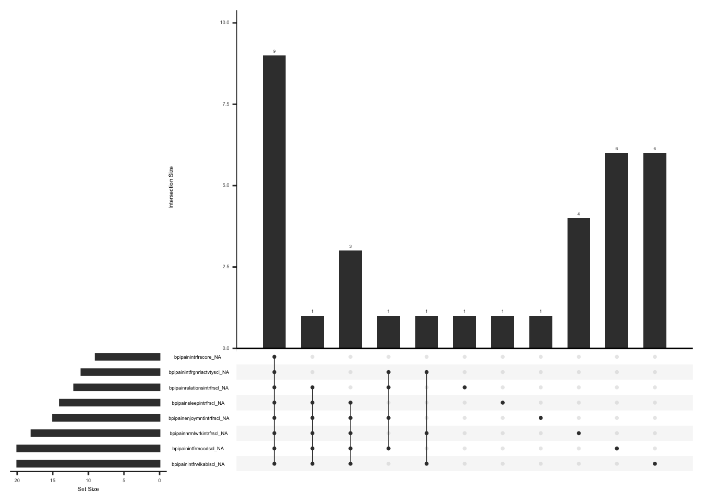
We will create a variable “pain_intrf” and assign a value of 1 if worst pain intensity at the surgical site is available and at least 4 of 7 pain interference item are available, 2 if response to worst pain intensity at the surgical site is available and less than or equal to 3 of 7 pain interference items are available, 3 if there is no response to worst pain intensity at the surgical site but at least 4 out 7 pain interference items are available, 4 if there is no response to worst pain intensity at the surgical site and less than or equal to 3 of 7 pain interference items are available.
bpi_pain_intrf <- bpi_pain_intrf %>%
mutate(intrf_not_na = rowSums(!is.na(select(.,"bpipainintfrgnrlactvtyscl":"bpipainenjoymntintrfrscl")))) %>%
mutate(pain_intrf = case_when(!is.na(bpiworstpainratingss) & intrf_not_na >= 4 ~ 1,
!is.na(bpiworstpainratingss) & intrf_not_na <= 3 ~2,
is.na(bpiworstpainratingss) & intrf_not_na >= 4 ~ 3, is.na(bpiworstpainratingss) & intrf_not_na <= 3 ~ 4 ,TRUE~0)) %>%
select(-intrf_not_na) %>%
as_tibble() %>%
mutate(pain_intrf = as.factor(pain_intrf))We will create a new field “new_bpipainintrfrscore” with pain interference scores for observations that meet the conditions pain_intrf = 1 or pain_intrf = 3.
bpi_pain_intrf <- bpi_pain_intrf %>%
mutate(new_bpipainintrfrscore = case_when(pain_intrf == 1 | pain_intrf == 3 ~ bpipainintrfrscore)) Compare the distributions for bpipainintrfrscore and new_bpipainintrfrscore
summary(bpi_pain_intrf$new_bpipainintrfrscore) Min. 1st Qu. Median Mean 3rd Qu. Max. NA's
0.0000 0.8571 3.4286 3.5069 5.5714 10.0000 40 summary(bpi_pain_intrf$bpipainintrfrscore) Min. 1st Qu. Median Mean 3rd Qu. Max. NA's
0.0000 0.8571 3.4286 3.4807 5.5714 10.0000 23 We see that there are more NA values for new_bpipainintrfrscore since this score was calculated for the observation that met the condition of more than or equal to 4 of 7 pain interference responses available.
D.2.4.2 New field name(s)
Add the field name “pain_intrf” and “new_bpipainintrfrscore” to the data dictionary
# Create field names
pain_intrf_new_row1 <- data.frame(
field_name = "pain_intrf",
form_name = "bpisf_the_brief_pain_inventory_v23_short_form_bpi",
field_type = "Factor",
select_choices_or_calculations = "1,worst pain intensity at the surgical site and atleast 4 of 7 pain intereference items are available|2, worst pain intensity at the surgical site and less than or equal to 3 out 7 pain interference items are available| 3, no response to worst pain intensity at the surgical site but atleast 4 out 7 pain interference items are available |4, no response to worst pain intensity at the surgical site and less than or equal to 3 out 7 pain interference items are available")
# new row for new_bpipainintrfrscore
pain_intrf_new_row2 <- data.frame(
field_name = "new_bpipainintrfrscore",
form_name = "bpisf_the_brief_pain_inventory_v23_short_form_bpi",
field_type = "numeric",
select_choices_or_calculations = "mean of interference items,if there is a response to atleast 4 of 7 items")
# Add new rows
psy_soc_dict <- psy_soc_dict %>%
add_row(!!!pain_intrf_new_row1, .after = match("bpipainintrfrscore", psy_soc_dict$field_name)) %>%
add_row(!!!pain_intrf_new_row2, .after = match("bpipainintrfrscore", psy_soc_dict$field_name))D.2.4.3 Save:
Save “bpi_pain_intrf” and updated data dictionary as .csv files in the folder named “reformatted_bpi”
write_csv(bpi_pain_intrf,file=here::here("data","Psychosocial","Reformatted","reformatted_bpi_pain_intrf.csv"))
write_csv(psy_soc_dict,file=here::here("data","Psychosocial","Reformatted","updated_psy_soc_dictionary.csv"))D.2.5 Knee Injury Osteoarthritis Outcome Score (KOOS-12)
KOOS-12 is a 12-item scale that contains three sub scales (Roos et al., 1998):
Roos, E. M., Roos, H. P., Lohmander, L. S., Ekdahl, C., & Beynnon, B. D. (1998). Knee Injury and Osteoarthritis Outcome Score (KOOS)Development of a Self-Administered Outcome Measure. Journal of Orthopaedic & Sports Physical Therapy, 28(2), 88–96. https://doi.org/10.2519/jospt.1998.28.2.88
4 KOOS Pain items
4 KOOS Function (Activities of Daily Living and Sport/Recreation) items
4 KOOS Quality of Life (QOL) items to assesses knee pain none to extreme).
There must be a response to at least half of the items in each sub scale to calculate a sub scale score KOOS calculator. These scores are transformed to range from 0 to 100, where 0 represents extreme problems and 100 represents no problems.
D.2.5.1 Read in Data:
Read in psy_soc1 dataframe and select field names from the KOOS-12 data, keeping completed forms will subset to the TKA cohort by default, we will call this koos
koos <- applyFilter("koos",knee_injury_osteoarthritis_outcome_score_koos12_complete)D.2.5.2 Missing Data:
Missing data pattern in koos.
gg_miss_upset(koos, nsets = n_var_miss(koos),order.by= "degree", point.size = 1, line.size = 0.25,
text.scale = c(0.5))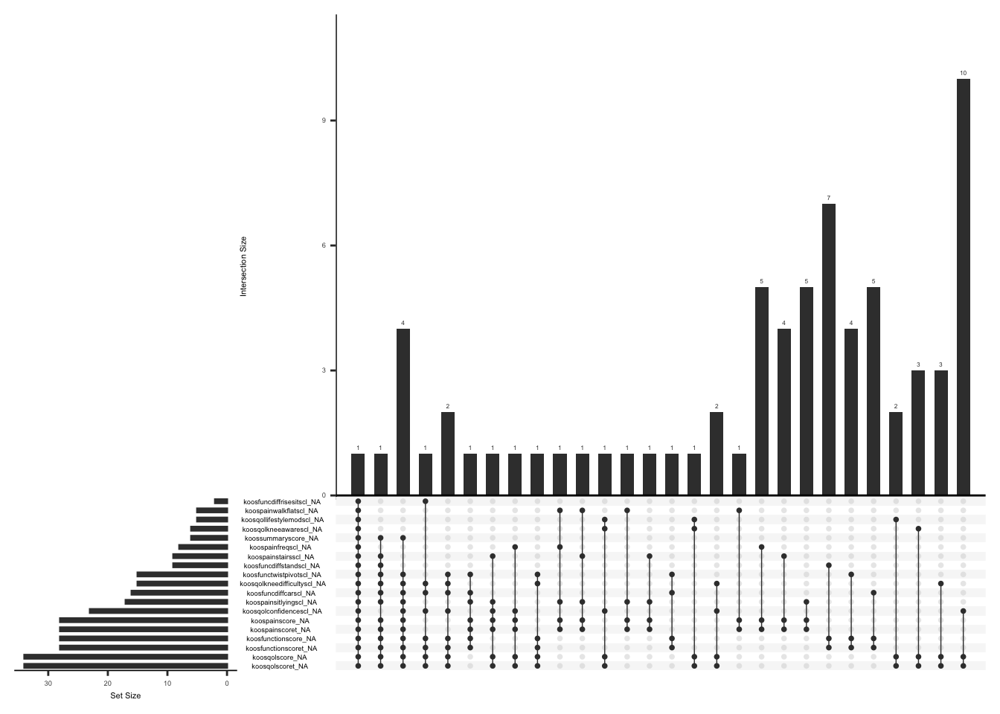
If at least half of the items are answered for a given subscale, a subscale score can be calculated as follows KOOS calculator:
\[ 100-(mean (subscale score) \times 100 / 4) \]
The mean of all three subscale scores is then used to construct an overall KOOS-12 Summary knee impact score. As with sub scale scores, KOOS-12 summary scores range from 0-100, where 0 represents extreme problems and 100 represents no problems. A Summary impact score is not calculated if any of the three scale scores are missing.
Using the above equation, we will create three subscale scores:
pain_score for 4 KOOS Pain items
func_score for 4 KOOS Function (Activities of Daily Living and Sport/Recreation) items
qol_score for 4 KOOS Quality of Life (QOL) items.
We will also create a summary impact score “pain_summary”
pain <- c("koospainfreqscl","koospainwalkflatscl","koospainstairsscl", "koospainsitlyingscl")
func <- c("koosfuncdiffrisesitscl","koosfuncdiffstandscl","koosfuncdiffcarscl","koosfunctwistpivotscl")
qol <- c("koosqolkneeawarescl","koosqollifestylemodscl","koosqolconfidencescl","koosqolkneedifficultyscl")
all_koos <- c("new_pain_score","new_func_score","new_qol_score")
koos <- koos %>%
mutate(pain_not_na = rowSums(!is.na(select(., all_of(pain))))) %>%
mutate(func_not_na = rowSums(!is.na(select(., all_of(func))))) %>%
mutate(qol_not_na = rowSums(!is.na(select(., all_of(qol))))) %>%
mutate(new_pain_score = case_when(pain_not_na >= 2 ~ 100 - ((rowMeans(select(., all_of(pain)), na.rm = TRUE)*100)/4))) %>%
mutate(new_func_score = case_when(func_not_na >= 2 ~ 100 - ((rowMeans(select(., all_of(func)), na.rm = TRUE)*100)/4))) %>%
mutate(new_qol_score = case_when(qol_not_na >= 2 ~100 - ((rowMeans(select(., all_of(qol)), na.rm = TRUE)*100)/4))) %>%
mutate(new_pain_summary =rowMeans(select(., all_of(all_koos))))We will now check the frequencies of all the scores (new vs. original) after accounting for missing data.
new_koos <- koos %>%
select(c("new_qol_score","new_pain_score","new_func_score","new_pain_summary"))
old_koos <- koos %>%
select(c("koospainscoret","koosfunctionscoret","koosqolscoret","koossummaryscore"))Upset plot below shows missing scores in the original dataset
gg_miss_upset(old_koos, nsets = n_var_miss(old_koos),order.by= "degree", point.size = 1, line.size = 0.25,
text.scale = c(0.5)) 
Upset plot below shows missing scores for observation that don’t meet the criteria for calculating a scale score i.e. If at least half of the items are answered
gg_miss_upset(new_koos, nsets = n_var_miss(new_koos),order.by= "degree", point.size = 1, line.size = 0.25,
text.scale = c(0.5))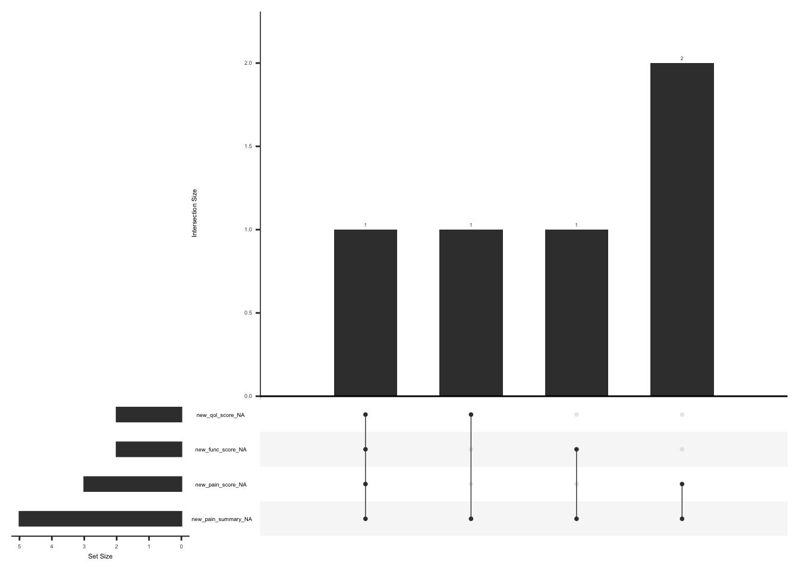
D.2.5.3 New field name(s)
Add the field names “new_qol_score”,“new_pain_score”, “new_func_score” and “new_pain_summary” to the data dictionary
# Create New field name(s)s
qol_score_new_row <- data.frame(
field_name = "new_qol_score",
form_name = "knee_injury_osteoarthritis_outcome_score_koos12",
field_type = "numeric",
field_label = "0 represents extreme problems and 100 represents no problems",
field_note = "If at least half of the items are answered for quality of life subscale, a subscale score can be calculated as follows 100-(mean (quality of life subscale) X 100 / 4")
func_score_new_row <- data.frame(
field_name = "new_func_score",
form_name = "knee_injury_osteoarthritis_outcome_score_koos12",
field_type = "numeric",
field_label = "0 represents extreme problems and 100 represents no problems",
field_note= "If at least half of the items are answered for function subscale, a subscale score can be calculated as follows 100-(mean (function subscale) X 100 / 4")
pain_score_new_row <- data.frame(
field_name = "new_pain_score",
form_name = "knee_injury_osteoarthritis_outcome_score_koos12",
field_type = "numeric",
field_label = "0 represents extreme problems and 100 represents no problems",
field_note= "If at least half of the items are answered for pain subscale, a subscale score can be calculated as follows 100-(mean (pain subscale) X 100 / 4")
pain_summary_new_row <- data.frame(
field_name = "new_pain_summary",
form_name = "knee_injury_osteoarthritis_outcome_score_koos12",
field_type = "numeric",
field_label = "0 represents extreme problems and 100 represents no problems",
field_note= "If all three scale scores are available, The mean of all three subscale scores is then used to construct an overall KOOS-12 Summary knee impact score")
# Add new rows
psy_soc_dict <- psy_soc_dict %>%
add_row(!!!qol_score_new_row, .after = match("koosqolscoret", psy_soc_dict$field_name)) %>% # new qol score
add_row(!!!func_score_new_row, .after = match("koosfunctionscoret", psy_soc_dict$field_name)) %>% # new func score
add_row(!!!pain_score_new_row, .after = match("koospainscoret", psy_soc_dict$field_name)) # new pain score
psy_soc_dict <- psy_soc_dict %>%
add_row(!!!pain_summary_new_row, .after = match("koossummaryscore", psy_soc_dict$field_name)) # new summary scoreD.2.5.4 Save:
Save “koos” and updated data dictionary as .csv files in the folder named “reformatted_koos”
write_csv(koos,file=here::here("data","Psychosocial","Reformatted","reformatted_koos.csv"))
write_csv(psy_soc_dict,file=here::here("data","Psychosocial","Reformatted","updated_psy_soc_dictionary.csv"))D.2.6 Generalized Anxiety Disorder 7 Item (GAD7) Scale Score
The GAD-7 is a 7-item likert scale questionnaire that assesses anxiety levels over the last two weeks. The response to each item is rated on a scale of 0 (“not at all”) to 3 (“nearly every day”). A total score is calculated by adding the scores for all the 7 items and ranges from 0 to 21. A greater total score on the GAD-7 reflects higher anxiety levels(Spitzer et al., 2006). At the end of the questionnaire there is an additional question (“gad7difficulttowork”) to evaluate the subject’s perception about the impact of identified problems on their activities such as work, taking care of things at home, or interacting with others.
Spitzer, R. L., Kroenke, K., Williams, J. B. W., & Löwe, B. (2006). A Brief Measure for Assessing Generalized Anxiety Disorder. Archives of Internal Medicine, 166(10), 1092. https://doi.org/10.1001/archinte.166.10.1092
D.2.6.1 Read in Data:
Read in psy_soc1 dataframe and select field names from the GAD7 data and keep completed forms, we will call this gad
gad <- applyFilter("gad",generalized_anxiety_disorder_7_item_gad7_scale_sco_complete)D.2.6.2 Missing Data:
Missing data pattern in gad. We will exclude “gad7difficulttowork” since the response to this field name is conditional on the responses to the rest of the GAD7 items.
gg_miss_upset(gad%>%
select(-gad7difficulttowork), nsets = n_var_miss(gad ),order.by= "degree", point.size = 1, line.size = 0.25,
text.scale = c(0.5))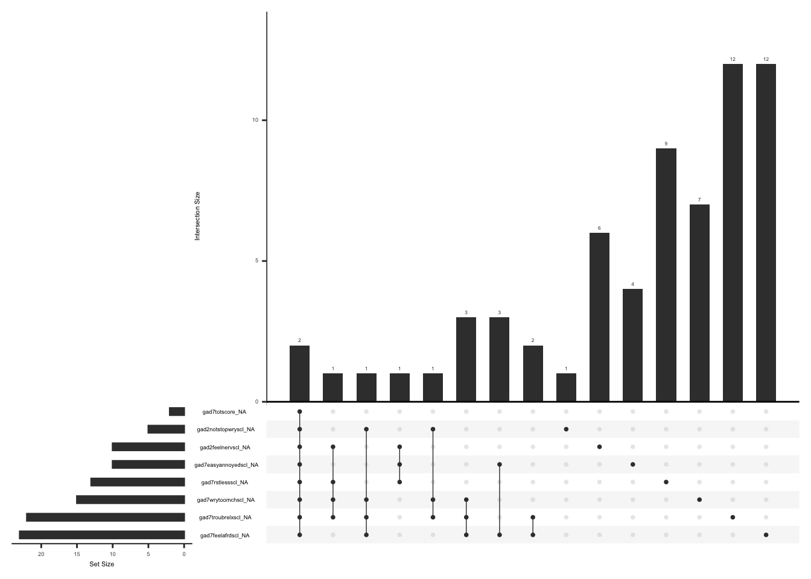
Handling missing data:
In case of missing values, a total score can still be calculated if responses to 5 of 7 items are available (less than or equal to 29% missing data). The missing responses are first replaced with the average score of the completed items and then a total score is calculated by adding the scores for all the 7 items(Arrieta et al., 2017).
There are two observations with complete data missing, we will remove these observations. We will create a variable “gad_diff” and assign a value of 1 if there is a response to “gad7difficulttowork” and less than or equal to 2 GAD items are missing, 2 if there is a response to “gad7difficulttowork” and more than 2 GAD items are missing, 3 if there is no response to “gad7difficulttowork” and less than or equal to 2 GAD items are missing, 4 if there is no response to “gad7difficulttowork” more than 2 GAD items are missing.
gad_vector <- c("gad2feelnervscl","gad2notstopwryscl","gad7wrytoomchscl", "gad7troubrelxscl","gad7rstlessscl","gad7easyannoyedscl","gad7feelafrdscl")
gad <- gad %>%
mutate(gad_not_na = rowSums(!is.na(select(., all_of(gad_vector))))) %>%
mutate(gad_diff = case_when(!is.na(gad7difficulttowork) & gad_not_na >= 5 ~ 1,
!is.na(gad7difficulttowork) & gad_not_na < 5 ~2,
is.na(gad7difficulttowork) & gad_not_na >= 5 ~ 3, is.na(gad7difficulttowork) & gad_not_na < 5 ~ 4 ,TRUE~0)) %>%
as_tibble() %>%
mutate(gad_diff = as.factor(gad_diff)) %>%
filter(gad_not_na !=0)We will now replace missing values with the rounded mean of remaining items if gad_diff = 1 or gad_diff = 3 i.e less than or equal to 2 GAD items are missing
gad_vector <- c("gad2feelnervscl","gad2notstopwryscl","gad7wrytoomchscl", "gad7troubrelxscl","gad7rstlessscl","gad7easyannoyedscl","gad7feelafrdscl")
gad <- gad %>%
filter(gad_not_na != 0) %>%
mutate(mean_gad = case_when(gad_diff == 1 | gad_diff == 3 ~ round(rowMeans(select(., all_of(gad_vector)), na.rm = TRUE)))) %>%
mutate(across(all_of(gad_vector), ~if_else(is.na(.),mean_gad, .))) %>%
mutate(imputed_gad_score = case_when(gad_diff == 1 | gad_diff == 3 ~ rowSums(select(., all_of(gad_vector)), na.rm = TRUE)))Check missingness pattern after imputation
gg_miss_upset(gad%>%
select(-gad7difficulttowork,-mean_gad,-imputed_gad_score), nsets = n_var_miss(gad ),order.by= "degree", point.size = 1, line.size = 0.25,
text.scale = c(0.5))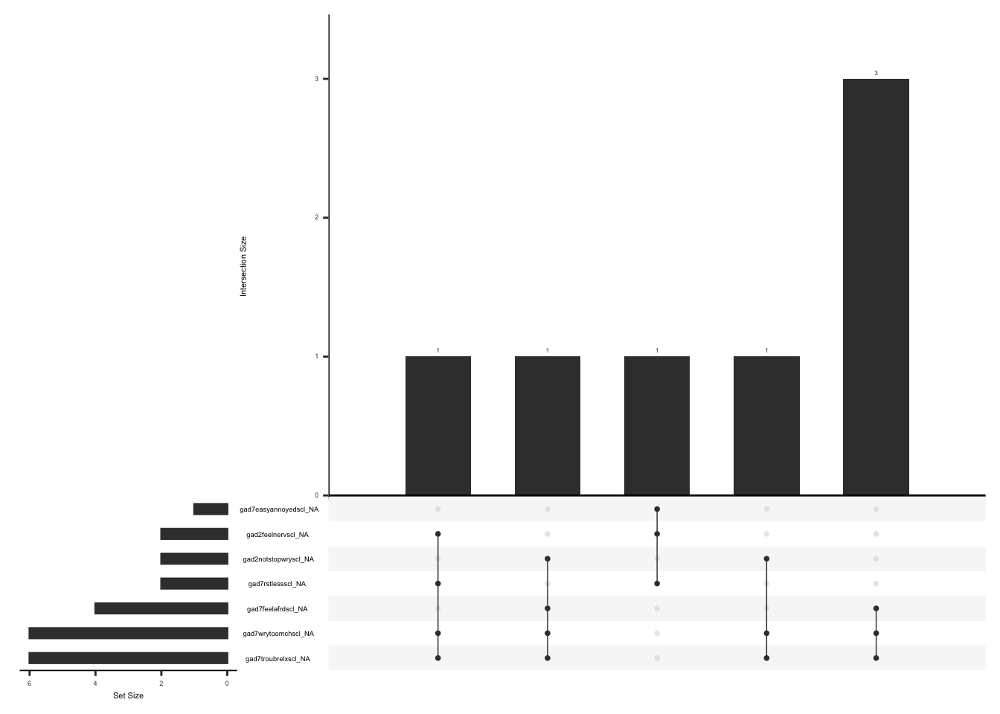
check distributions of gad scores before (gad7totscore) and after imputation (imputed_gad_score)
gad_plot <- gad %>%
filter( between(gad_not_na,5,6)) %>%
select(guid,gad7totscore,imputed_gad_score) %>%
pivot_longer(cols =c("gad7totscore","imputed_gad_score"), values_to = "score",names_to = "score_name")
ggplot(gad_plot, aes(x=score_name,y=score, fill=score_name)) +
geom_violin(alpha=.25)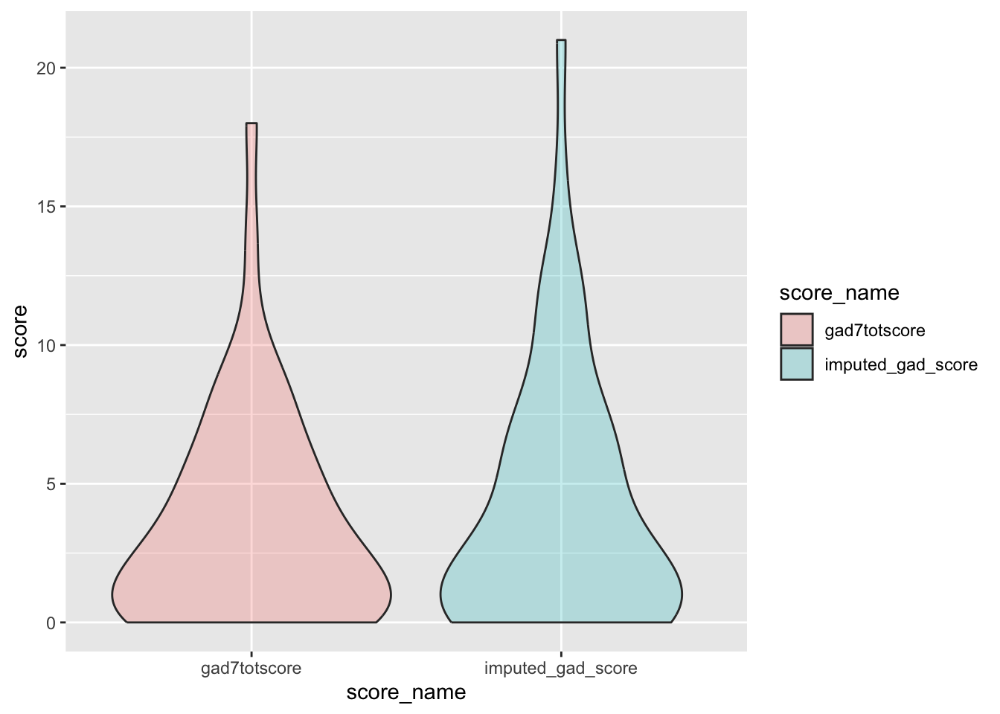
Remove intermediate field names not needed
gad<- gad %>%
select(-gad_not_na,-mean_gad)D.2.6.3 New field name(s)
Add the field names “gad_diff” and “imputed_gad_score”to the data dictionary
# Create field names
gad_diff_new_row <- data.frame(
field_name = "gad_diff",
form_name = "generalized_anxiety_disorder_7_item_gad7_scale_sco",
field_type = "factor",
select_choices_or_calculations = "1, if there is a response to gad7difficulttowork and less than or equal to 2 GAD items are missing|2, if there is a response to gad7difficulttowork and more than 2 GAD items are missing|3,if there is no response to gad7difficulttowork and less than or equal to 2 GAD items are missing|4,if there is no response to gad7difficulttowork more 2 GAD items are missing" )
gad_score_new_row <- data.frame(
field_name = "imputed_gad_score",
form_name = "generalized_anxiety_disorder_7_item_gad7_scale_sco",
field_type = "numeric",
field_label = " A total score ranges from 0 to 21. A greater total score on the GAD-7 reflects higher anxiety levels",
field_note= "The missing responses are first replaced with the average score of the completed items and then a total score is calculated by adding the scores for all the 7 items")
# Adding new rows to the data dictionary
# adding gad_diff
psy_soc_dict <- psy_soc_dict %>%
add_row(!!!gad_diff_new_row, .after = match("gad7difficulttowork", psy_soc_dict$field_name))
# imputed gad score score
psy_soc_dict <- psy_soc_dict %>%
add_row(!!!gad_score_new_row, .after = match("gad7difficulttowork", psy_soc_dict$field_name))D.2.6.4 Save:
Save “gad” and updated data dictionary as .csv files in the folder named “reformatted_gad”
write_csv(gad,file = here::here("data","Psychosocial","Reformatted","reformatted_gad.csv"))
write_csv(psy_soc_dict,file=here::here("data","Psychosocial","Reformatted","updated_psy_soc_dictionary.csv"))D.2.7 Patient Health Questionnaire Depression Scale (PHQ) Scored
The PHQ is a 8-item likert scale questionnaire that assesses depression levels over the last two weeks. The response to each item is rated on a scale of 0 (“not at all”) to 3 (“nearly every day”). The total score is calculated by adding the scores for all the 8 items. A score greater than 10 on PHQ indicates major depressive disorder(Kroenke et al., 2009).
Kroenke, K., Strine, T. W., Spitzer, R. L., Williams, J. B. W., Berry, J. T., & Mokdad, A. H. (2009). The PHQ-8 as a measure of current depression in the general population. Journal of Affective Disorders, 114(1-3), 163–173. https://doi.org/10.1016/j.jad.2008.06.026
D.2.7.1 Read in Data:
Read in psy_soc1 dataframe and select field names from the PHQ data and keep completed forms, we will call phq
phq <- applyFilter("phq",patient_health_questionnaire_depression_scale_phq_complete)D.2.7.2 Missing Data:
Missing data pattern in phq.
gg_miss_upset(phq, nsets = n_var_miss(phq),order.by= "degree", point.size = 1, line.size = 0.25,
text.scale = c(0.5))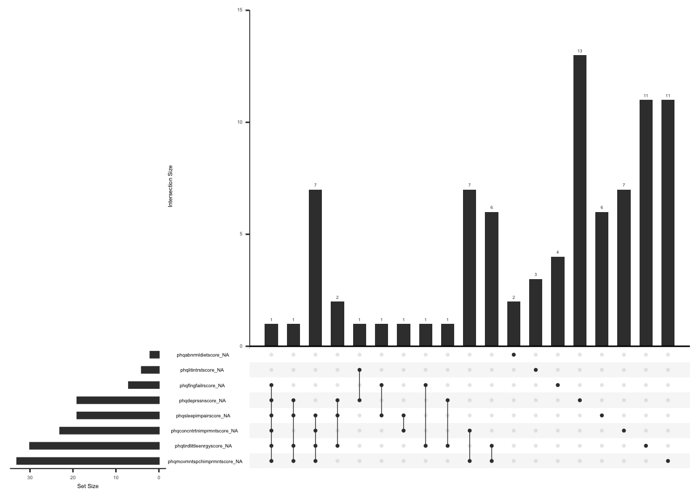
Handling missing data:
In case of missing values, a total score can still be calculated if responses to 6 of 8 items are available (less than or equal to 29% missing data). The missing responses are first replaced with the average score of the completed items and then a total score is calculated by adding the scores for all the 8 items(Arrieta et al., 2017).
None of the observations have complete data missing. We will create a variable “phq_diff” and assign a value of 1 if there is a response to more than or equal to 6 of 8 PHQ items and 0 if there is a response to less than 6 of 8 PHQ items.
phq_vector <- c("phqlitintrstscore","phqdeprssnscore","phqsleepimpairscore","phqtirdlittleenrgyscore","phqabnrmldietscore","phqflngfailrscore","phqconcntrtnimprmntscore","phqmovmntspchimprmntscore")
phq <- phq %>%
mutate(phq_not_na = rowSums(!is.na(select(., all_of(phq_vector))))) %>%
mutate(phq_diff = case_when(phq_not_na >= 6 ~ 1
,TRUE~0)) %>%
as_tibble() %>%
mutate(phq_diff = as.factor(phq_diff))We will now replace missing values with the rounded mean of remaining items if phq_diff = 1 i.e if less than or equal to 2 PHQ items are missing and calculate the total score by taking a sum of all the items.
phq <- phq %>%
mutate(mean_phq = case_when(phq_diff == 1 ~ round(rowMeans(select(., all_of(phq_vector)), na.rm = TRUE)))) %>%
mutate(across(all_of(phq_vector), ~if_else(is.na(.),mean_phq, .))) %>%
mutate(imputed_phq_score = case_when(phq_diff == 1 ~ rowSums(select(., all_of(phq_vector)), na.rm = TRUE)))Check missingness pattern after imputation
gg_miss_upset(phq %>%
select(-mean_phq,-imputed_phq_score), nsets = n_var_miss(phq),order.by= "degree", point.size = 1, line.size = 0.25,
text.scale = c(0.5))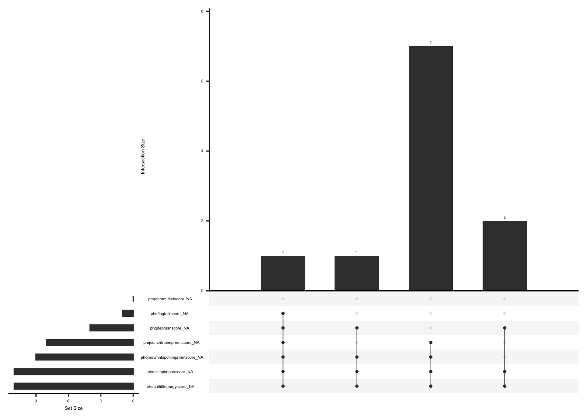
check distributions of phq scores before (phqtotalscore) and after imputation (imputed_phq_score)
phq_plot <- phq %>%
filter( between(phq_not_na,6,8)) %>%
select(guid,phqtotalscore,imputed_phq_score) %>%
pivot_longer(cols =c("phqtotalscore","imputed_phq_score"), values_to = "score",names_to = "score_name")
ggplot(phq_plot, aes(x=score_name,y=score, fill=score_name)) +
geom_violin(alpha=.25)
Remove intermediate field names not needed
phq<- phq %>%
select(-phq_not_na,-mean_phq)D.2.7.3 New field name(s)
Add the field names “phq_diff” and “imputed_phq_score”to the data dictionary
# Create field names
phq_diff_new_row <- data.frame(
field_name = "phq_diff",
form_name = "patient_health_questionnaire_depression_scale_phq",
field_type = "factor",
select_choices_or_calculations = "1, if there is a response to more than or equal to 6 of 8 PHQ items|0,if there is a response to less than 6 of 8 PHQ items")
phq_score_new_row <- data.frame(
field_name = "imputed_phq_score",
form_name = "patient_health_questionnaire_depression_scale_phq",
field_type = "numeric",
field_label = "A greater than 10 total score on the PHQ indicates major depressive disorder ",
field_note= "The missing responses are first replaced with the average score of the completed items and then a total score is calculated by adding the scores for all the 8 items")
# Add new rows
psy_soc_dict <- psy_soc_dict %>%
add_row(!!!phq_diff_new_row, .after = match("phqtotalscore", psy_soc_dict$field_name)) # new summary score
# imputed phq score
psy_soc_dict <- psy_soc_dict %>%
add_row(!!!phq_score_new_row, .after = match("phq_diff", psy_soc_dict$field_name)) # new summary scoreD.2.7.4 Save:
Save “phq” and updated data dictionary as .csv files in the folder named “reformatted_phq”
write_csv(phq,file = here::here("data","Psychosocial","Reformatted","reformatted_phq.csv"))
write_csv(psy_soc_dict,file=here::here("data","Psychosocial","Reformatted","updated_psy_soc_dictionary.csv"))D.2.8 Fear-Avoidance Beliefs Questionnaire v0.3 (FABQ)
The FABQ is a 4-item questionnaire that assesses fear avoidance behavior. The response to each item ranges from 0 (completely disagree) to 6 (completely agree)(Waddell et al., 1993). A total score is calculated by adding the scores for all the items and ranges from 0-24. A higher score indicates a higher degree of fear-avoidance belief.
Waddell, G., Newton, M., Henderson, I., Somerville, D., & Main, C. J. (1993). A Fear-Avoidance Beliefs Questionnaire (FABQ) and the role of fear-avoidance beliefs in chronic low back pain and disability. Pain, 52(2), 157–168. https://doi.org/10.1016/0304-3959(93)90127-b
D.2.8.1 Read in Data:
Read in psy_soc1 dataframe and select field names from the FABQ data and keep completed forms, we will call FABQ
fabq <- applyFilter("fabq",fearavoidance_beliefs_questionnaire_v03_fabq_complete)D.2.8.2 Missing Data:
Missing data pattern in fabq.
gg_miss_upset(fabq, nsets = n_var_miss(fabq),order.by= "degree", point.size = 1, line.size = 0.25,
text.scale = c(0.5))
Handling missing data:
In case of missing values, a total score can be calculated if responses to 3 of 4 items are available (less than or equal to 29% missing data). The missing responses are first replaced with the average score of the completed items and then a total score is calculated by adding the scores for all the 4 items(Arrieta et al., 2017).
Arrieta, J., Aguerrebere, M., Raviola, G., Flores, H., Elliott, P., Espinosa, A., Reyes, A., Ortiz-Panozo, E., Rodriguez-Gutierrez, E. G., Mukherjee, J., Palazuelos, D., & Franke, M. F. (2017). Validity and Utility of the Patient Health Questionnaire (PHQ)-2 and PHQ-9 for Screening and Diagnosis of Depression in Rural Chiapas, Mexico: A Cross-Sectional Study. Journal of Clinical Psychology, 73(9), 1076–1090. https://doi.org/10.1002/jclp.22390
We will create a variable “fabq_diff” and assign a value of 1 if there is a response to more than or equal to 3 of 4 FABQ items and 0 if there is a response to less than 3 of 4 FABQ items.
fabq_vector <- c("fabqphysclactvtywrsscl","fabqphysclactvtybckhrmscl","fabqphysactvtyshldntdoscl","fabqphysactvtycnntdoscl")
fabq <- fabq %>%
mutate(fabq_not_na = rowSums(!is.na(select(., all_of(fabq_vector))))) %>%
mutate(fabq_diff = case_when(fabq_not_na >= 3 ~ 1
,TRUE~0)) %>%
as_tibble() %>%
mutate(fabq_diff = as.factor(fabq_diff))We will now replace missing values with the rounded mean of remaining items if fabq_diff = 1 i.e if less than or equal to 1 FABQ item is missing and calculate the total score by taking a sum of all the items.
fabq <- fabq %>%
mutate(raw_fabq_score = rowSums(select(., all_of(fabq_vector)), na.rm = TRUE)) %>%
mutate(mean_fabq = case_when(fabq_diff == 1 ~ round(rowMeans(select(., all_of(fabq_vector)), na.rm = TRUE)))) %>%
mutate(across(all_of(fabq_vector), ~if_else(is.na(.),mean_fabq, .))) %>%
mutate(imputed_fabq_score = case_when(fabq_diff == 1 ~ rowSums(select(., all_of(fabq_vector)), na.rm = TRUE)))Check missingness pattern after imputation
gg_miss_upset(fabq, nsets = n_var_miss(fabq),order.by= "degree", point.size = 1, line.size = 0.25,
text.scale = c(0.5))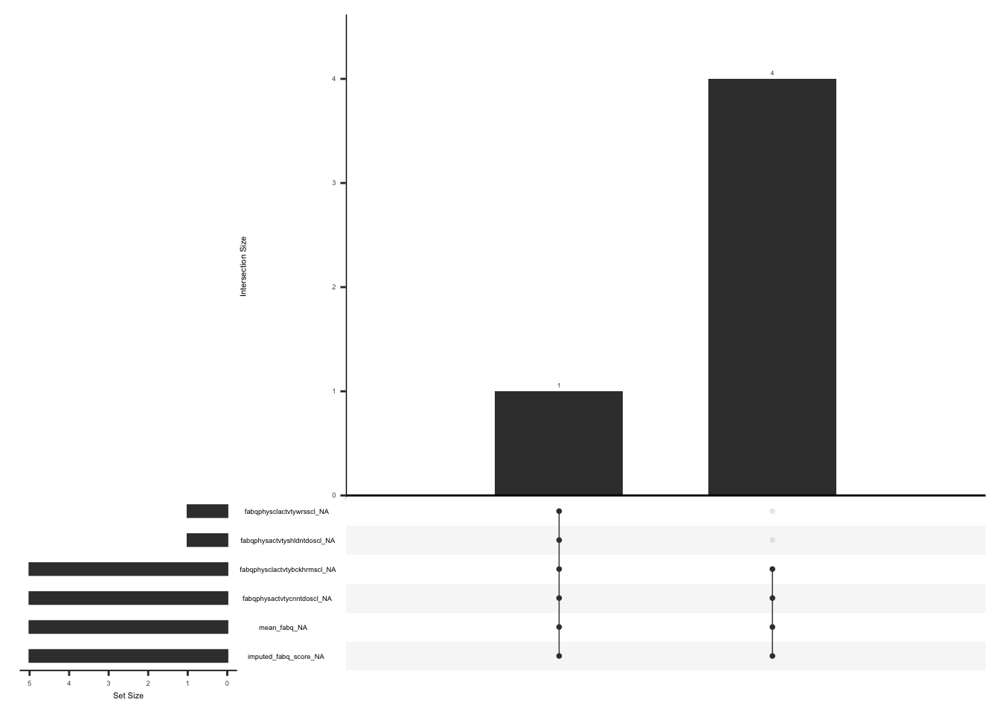
check distributions of fabq scores before (raw_fabq_score) and after imputation (imputed_fabq_score)
fabq_plot <- fabq %>%
filter(between(fabq_not_na,3,4)) %>%
select(guid,raw_fabq_score,imputed_fabq_score) %>%
pivot_longer(cols =c("raw_fabq_score","imputed_fabq_score"), values_to = "score",names_to = "score_name")
ggplot(fabq_plot, aes(x=score_name,y=score, fill=score_name)) +
geom_violin(alpha=.25)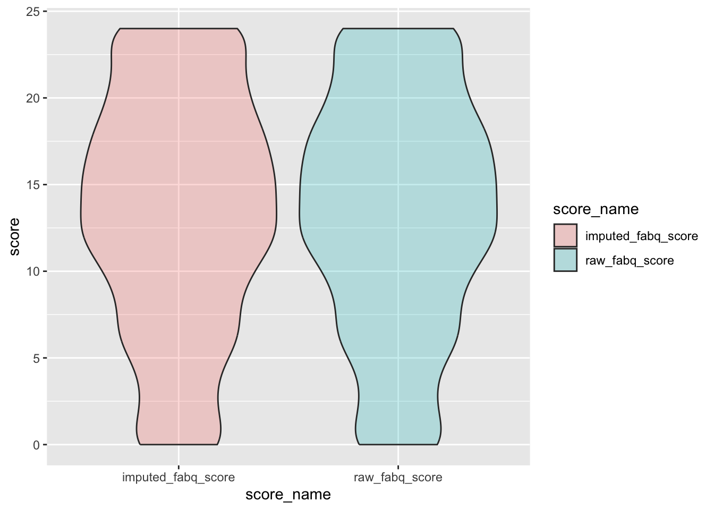
Remove intermediate field names not needed
fabq <- fabq %>%
select(-fabq_not_na,-mean_fabq)D.2.8.3 New field name(s)
Add the field names “fabq_diff” and “imputed_fabq_score” to the data dictionary
# Create field names
fabq_diff_new_row <- data.frame(
field_name = "fabq_diff",
form_name = "fearavoidance_beliefs_questionnaire_v03_fabq",
field_type = "factor",
select_choices_or_calculations = "1, if there is a response to more than or equal to 3 of 4 FABQ items|0, if there is a response to less than 3 of 4 FABQ items")
fabq_score_new_row <- data.frame(
field_name = "imputed_fabq_score",
form_name = "fearavoidance_beliefs_questionnaire_v03_fabq",
field_type = "numeric",
field_label = "A higher score indicates a higher degree of fear-avoidance beliefs",
field_note= "The missing responses are first replaced with the average score of the completed items and then a total score is calculated by adding the scores for all 4 items")
# Adding new rows to the data dictionary
# adding fabq_diff
psy_soc_dict <- psy_soc_dict %>%
add_row(!!!fabq_diff_new_row, .after = match("fabqphysclactvtybckhrmscl", psy_soc_dict$field_name))
# imputed fabq score
psy_soc_dict <- psy_soc_dict %>%
add_row(!!!fabq_score_new_row, .after = match("fabqphysclactvtybckhrmscl", psy_soc_dict$field_name))D.2.8.4 Save:
Save “fabq” and updated data dictionary as .csv files in the folder named “reformatted_fabq”
write_csv(fabq,file=here::here("data","Psychosocial","Reformatted","reformatted_fabq.csv"))
write_csv(psy_soc_dict,file=here::here("data","Psychosocial","Reformatted","updated_psy_soc_dictionary.csv"))D.2.9 Pain Catastrophizing Scale (PCS6)
The PCS-6 comprises six questions, each item is rated on a scale of 0 to 4, where 0 indicates “not at all” and 4 indicates “all the time.” The questionnaire also measures three sub-scales that evaluate rumination, magnification, and helplessness. A total score is calculated by adding the scores for all the 6 items and ranges from 0-24, the three sub scale scores can be calculated seperately as well[Darnall et al. (2017)](McWilliams et al., 2015). A higher score indicates higher degree catastrophizing.
Darnall, B. D., Sturgeon, J. A., Cook, K. F., Taub, C. J., Roy, A., Burns, J. W., Sullivan, M., & Mackey, S. C. (2017). Development and Validation of a Daily Pain Catastrophizing Scale. The Journal of Pain, 18(9), 1139–1149. https://doi.org/10.1016/j.jpain.2017.05.003
McWilliams, L. A., Kowal, J., & Wilson, K. G. (2015). Development and evaluation of short forms of the Pain Catastrophizing Scale and the Pain Self-efficacy Questionnaire. European Journal of Pain, 19(9), 1342–1349. https://doi.org/10.1002/ejp.665
D.2.9.1 Read in Data:
Read in psy_soc1 dataframe and select field names from the PCS-6 data and keep completed forms, we will call “pcs”
pcs <- applyFilter("pcq",pain_catastrophizing_questionnaire_pcs6_complete)D.2.9.2 Missing Data:
Missing data pattern in pcs.
gg_miss_upset(pcs %>%
select(-pcqtotalscoreval), nsets = n_var_miss(pcs),order.by= "degree", point.size = 1, line.size = 0.25,
text.scale = c(0.5))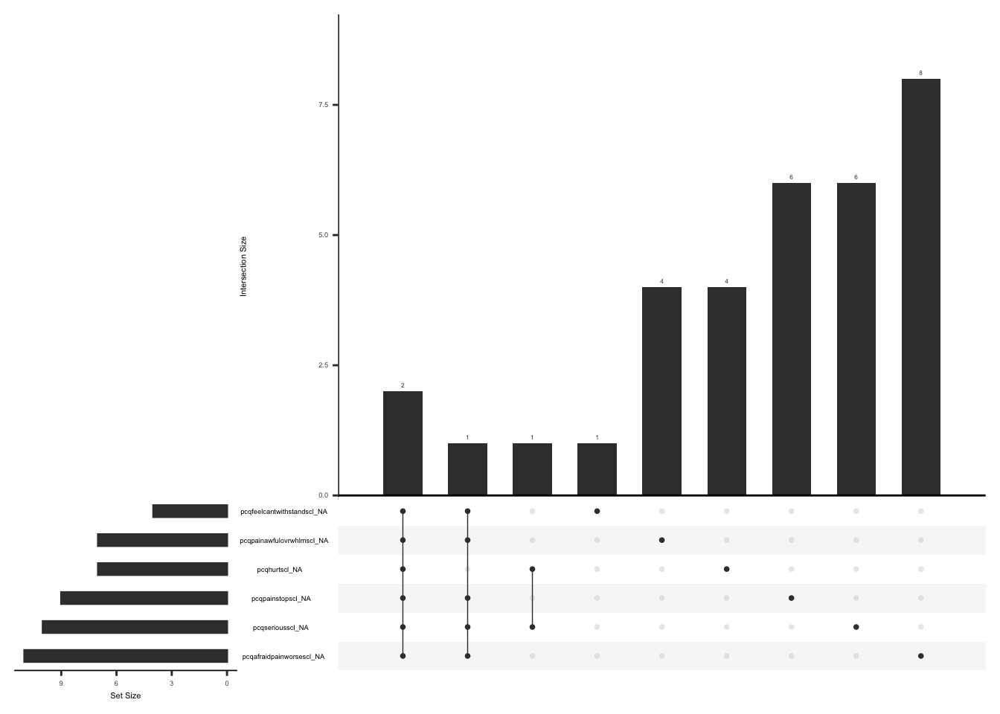
Handling missing data:
In case of missing values, a total score can still be calculated if responses to 5 of 6 items are available (0.29 x 6 = 1.74). The missing responses are first replaced with the average score of the completed items and then a total score is calculated by adding the scores for all the 6 items(refer to section 1.c).
Two of the the observations have complete data missing, we will remove these observations. We will create a variable “pcs_diff” and assign a value of 1 if there is a response to more than or equal to 5 of 6 PCS items and 0 if there is a response to less than 5 of 6 PCS items.
pcs_vector <- c("pcqpainawfulovrwhlmscl","pcqfeelcantwithstandscl","pcqafraidpainworsescl","pcqhurtscl","pcqpainstopscl","pcqseriousscl")
pcs <- pcs %>%
mutate(pcs_not_na = rowSums(!is.na(select(., all_of(pcs_vector))))) %>%
mutate(pcs_diff = case_when(pcs_not_na >= 5 ~ 1
,TRUE~0)) %>%
as_tibble() %>%
mutate(pcs_diff = as.factor(pcs_diff)) %>%
filter(pcs_not_na != 0)We will now replace missing values with the rounded mean of remaining items if pcs_diff = 1 i.e if 1 pcs item is missing, and calculate the total score by taking a sum of all the items.
pcs <- pcs %>%
mutate(raw_pcs_score = rowSums(select(., all_of(pcs_vector)), na.rm = TRUE)) %>%
mutate(mean_pcs = case_when(pcs_diff == 1 ~ round(rowMeans(select(., all_of(pcs_vector)), na.rm = TRUE)))) %>%
mutate(across(all_of(pcs_vector), ~if_else(is.na(.),mean_pcs, .))) %>%
mutate(imputed_pcs_score = case_when(pcs_diff == 1 ~ rowSums(select(., all_of(pcs_vector)), na.rm = TRUE)))Check missingness pattern after imputation
gg_miss_upset(pcs %>%
select(-pcqtotalscoreval,-raw_pcs_score,-imputed_pcs_score), nsets = n_var_miss(pcs),order.by= "degree", point.size = 1, line.size = 0.25,
text.scale = c(0.5))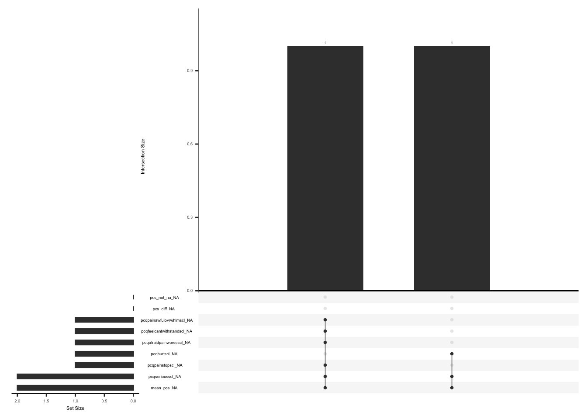
check distributions of PCS scores before (raw_pcs_score) and after imputation (imputed_pcs_score)
pcs_plot <- pcs %>%
filter(between(pcs_not_na,5,6)) %>%
select(guid,raw_pcs_score,imputed_pcs_score) %>%
pivot_longer(cols =c("raw_pcs_score","imputed_pcs_score"), values_to = "score",names_to = "score_name")
ggplot(pcs_plot, aes(x=score_name,y=score, fill=score_name)) +
geom_violin(alpha=.25)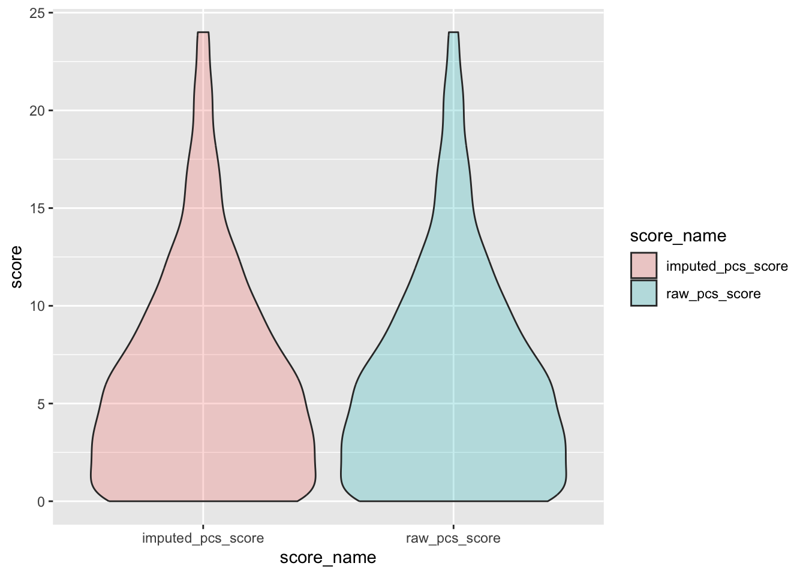
Remove intermediate field names not needed
pcs <- pcs %>%
select(-pcs_not_na,-mean_pcs,-raw_pcs_score)D.2.9.3 New field name(s)
Add the field names “pcs_diff” and “imputed_pcs_score”to the data dictionary
# Create field names
pcs_diff_new_row <- data.frame(
field_name = "pcs_diff",
form_name = "pain_catastrophizing_questionnaire_pcs6",
field_type = "factor",
select_choices_or_calculations = "1, if there is a response to more than or equal to 5 of 6 PCS items|0, if there is a response to less than 5 of 6 PCS items")
pcs_score_new_row <- data.frame(
field_name = "imputed_pcs_score",
form_name = "pain_catastrophizing_questionnaire_pcs6",
field_type = "numeric",
field_label = "A higher score indicates a higher degree of catastrophizing",
field_note= "The missing responses are first replaced with the average score of the completed items and then a total score is calculated by adding the scores for all the items")
# adding pcs_diff
psy_soc_dict <- psy_soc_dict %>%
add_row(!!!pcs_diff_new_row, .after = match("pcqtotalscoreval", psy_soc_dict$field_name))
# imputed pcs score
psy_soc_dict <- psy_soc_dict %>%
add_row(!!!pcs_score_new_row, .after = match("pcqtotalscoreval", psy_soc_dict$field_name)) D.2.9.4 Save:
Save “pcs” and updated data dictionary as .csv files in the folder named “reformatted_pcs”
write_csv(pcs,file=here::here("data","Psychosocial","Reformatted","reformatted_pcs.csv"))
write_csv(psy_soc_dict,file=here::here("data","Psychosocial","Reformatted","updated_psy_soc_dictionary.csv"))D.2.10 Symptom Severity Index v1.0 (SSI)
The SSI measures the severity of fatigue, cognitive dysfunction, and unrefreshed sleep over the past week using a Likert scale from 0 (no problem) to 3 (severe). If the sum of the scores of fatigue, waking unrefreshed, and cognitive symptoms is more than 0, an additional question (ssi_chronicyn) related to the duration of symptoms is asked. The questionnaire also comprises three additional questions for the history of lower abdomen pain, depression, and headache for at least three months (yes/no). The symptom severity scale (SSS) score is calculated by summing up the scores of fatigue, waking unrefreshed, and cognitive symptoms, which range from 0 to 9, and the sum (0-3) of additional symptoms experienced in the past six months. The final total score can be between 0 and 12.(Wolfe et al., 2016).
Wolfe, F., Clauw, D. J., Fitzcharles, M.-A., Goldenberg, D. L., Häuser, W., Katz, R. L., Mease, P. J., Russell, A. S., Russell, I. J., & Walitt, B. (2016). 2016 Revisions to the 2010/2011 fibromyalgia diagnostic criteria. Seminars in Arthritis and Rheumatism, 46(3), 319–329. https://doi.org/10.1016/j.semarthrit.2016.08.012
D.2.10.1 Read in Data:
Read in psy_soc1 dataframe and select field names from the SSI data and keep completed forms, we will call “ssi”
ssi <- applyFilter("ssi",symptom_severity_index_v10_ssi_complete)D.2.10.2 Missing Data:
Missing data pattern in SSI, we will exclude “ssi_chronicyn” since the response to this field name is conditional on the sum of fatigue, waking unrefreshed, and cognitive symptom scores being more than 0.
gg_miss_upset(ssi %>%
select(-ssi_chronicyn), nsets = n_var_miss(ssi),order.by= "degree", point.size = 1, line.size = 0.25,
text.scale = c(0.5))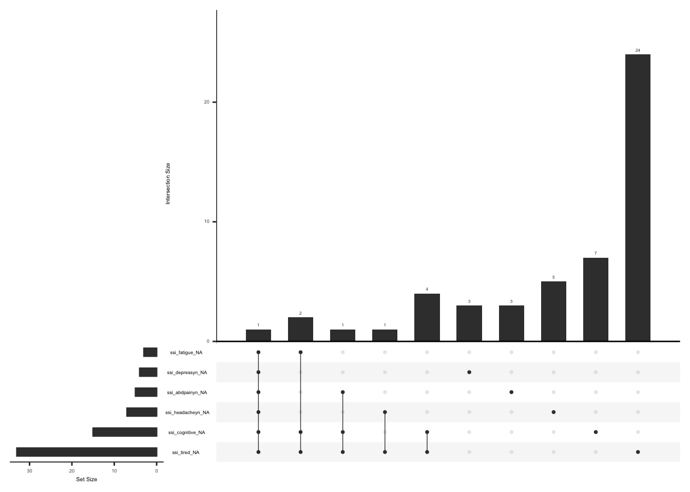
Handling missing data:
Missing values for fatigue, cognitive dysfunction, or unrefreshed sleep cannot be imputed using row wise means since 28% X 3 = 0.87, resulting in the floor value for non integer values being 0. Additionally we will not impute missing values for history of lower abdomen pain, depression, and headache for at least three months (yes/no)(refer section 1.c).
Scoring:
We will calculate:
A summed score for fatigue, cognitive dysfunction, or unrefreshed sleep if responses to all three items are available, ranging from 0-9, we will name this “ssi_symp_score”
A summed score for history of lower abdomen pain, depression, and headache for at least three months (yes/no), ranging from 0-3, we will name this “ssi_hist_score”
Finally we will calculate a total summed score ranging from 0-12 if responses to all items are available, we will name this “ssi_total_score”
ssi_symptoms <- c("ssi_fatigue","ssi_cognitive","ssi_tired")
ssi_history <- c("ssi_abdpainyn","ssi_depressyn","ssi_headacheyn")
ssi_all <- c("ssi_symp_score","ssi_hist_score")
ssi <- ssi %>%
mutate(ssi_symp_score = rowSums(select(., all_of(ssi_symptoms)), na.rm = FALSE)) %>%
mutate(ssi_hist_score = rowSums(select(., all_of(ssi_history)), na.rm = FALSE)) %>%
mutate(ssi_total_score = rowSums(select(., all_of(ssi_all)), na.rm = FALSE)) We will now create a field name “ssi_diff”, and assign a value of 0 if both ssi_symp_score and ssi_hist_score are missing, 1 if only ssi_symp_score is available, 2 if only ssi_hist_score is available and 3 if both scores and invariably the total score is available. If the sum of the scores of fatigue, waking unrefreshed, and cognitive symptoms is more than 0, an additional question (ssi_chronicyn) related to the duration of symptoms is asked. We will create a field name “ssi_missing_chronic” and assign a value of 0 if “ssi_symp_score” > 0 and “ssi_chronicyn” is missing, of 1 if “ssi_symp_score” > 0 and “ssi_chronicyn” is not missing, 2 if “ssi_sym_score” = 0 or “ssi_sym_score” is missing and “ssi_chronicyn” is missing.
ssi <- ssi %>%
mutate(ssi_diff = case_when(is.na(ssi_symp_score) & is.na(ssi_hist_score) ~0,
!is.na(ssi_symp_score) & is.na(ssi_hist_score)~1,
is.na(ssi_symp_score) & !is.na(ssi_hist_score)~2,
TRUE~3)) %>%
mutate(ssi_missing_chronic = case_when(ssi_symp_score > 0 & !is.na(ssi_chronicyn) ~1,
ssi_symp_score > 0 & is.na(ssi_chronicyn)~0,
TRUE~2)) %>%
mutate(ssi_diff = as.factor(ssi_diff)) %>%
mutate(ssi_missing_chronic=as.factor(ssi_missing_chronic))D.2.10.3 New field name(s)
Add the field names “ssi_symp_score”, “ssi_hist_score”, “ssi_total_score”, “ssi_diff”, and “ssi_missing_chronic” to the data dictionary.
# Create field names
ssi_symp_score_new_row <- data.frame(
field_name = "ssi_symp_score",
form_name = "symptom_severity_index_v10_ssi",
field_type = "numeric",
field_label = "Total score ranges from 0 to 9",
field_note= "Summed score for fatigue, cognitive dysfunction, or unrefreshed sleep if responses to all three items are available")
ssi_hist_score_new_row <- data.frame(
field_name = "ssi_hist_score",
form_name = "symptom_severity_index_v10_ssi",
field_type = "numeric",
field_label = "Total score ranges from 0 to 3",
field_note= "Summed score for history of lower abdomen pain, depression, and headache for at least three months (yes/no)")
ssi_total_score_new_row <- data.frame(
field_name = "ssi_total_score",
form_name = "symptom_severity_index_v10_ssi",
field_type = "numeric",
field_label = "Total score ranges from 0 to 12",
field_note= "Summed score of all the items if responses to all items are available")
ssi_diff_new_row <- data.frame(
field_name = "ssi_diff",
form_name = "symptom_severity_index_v10_ssi",
field_type = "factor",
select_choices_or_calculations = "0, if both ssi_symp_score and ssi_hist_score are missing, 1 if only ssi_symp_score is available|2, if only ssi_hist_score is available | 3, if both scores and invariably the total score is available")
ssi_missing_chronic_new_row <- data.frame(
field_name = "ssi_missing_chronic",
form_name = "symptom_severity_index_v10_ssi",
field_type = "factor",
select_choices_or_calculations = "0 if ssi_symp_score > 0 and ssi_chronicyn is missing| 1 if ssi_symp_score > 0 and ssi_chronicyn is not missing,2 if ssi_sym_score = 0 or is missing and ssi_chronicyn is missing")
# adding new rows
psy_soc_dict <- psy_soc_dict %>%
add_row(!!!ssi_symp_score_new_row, .after = match("ssi_headacheyn", psy_soc_dict$field_name))
psy_soc_dict <- psy_soc_dict %>%
add_row(!!!ssi_hist_score_new_row, .after = match("ssi_headacheyn", psy_soc_dict$field_name))
psy_soc_dict <- psy_soc_dict %>%
add_row(!!!ssi_total_score_new_row, .after = match("ssi_headacheyn", psy_soc_dict$field_name))
psy_soc_dict <- psy_soc_dict %>%
add_row(!!!ssi_diff_new_row, .after = match("ssi_headacheyn", psy_soc_dict$field_name))
psy_soc_dict <- psy_soc_dict %>%
add_row(!!!ssi_missing_chronic_new_row, .after = match("ssi_headacheyn", psy_soc_dict$field_name)) D.2.10.4 Save:
Save “ssi” and updated data dictionary as .csv files in the folder named “reformatted_ssi”
write_csv(ssi,file=here::here("data","Psychosocial","Reformatted","reformatted_ssi.csv"))
write_csv(psy_soc_dict,file=here::here("data","Psychosocial","Reformatted","updated_psy_soc_dictionary.csv"))D.2.11 Pain Detect Questionnaire (PD-Q)
The PD-Q consists of seven question to evaluate neuropathic pain, followed by two additional questions that focus on pain patterns to differentiate between neuropathic and nociceptive pain.
Each item in the initial seven questions is rated on a scale of 0 to 5, where 0 indicates “never” and 5 indicates “very strongly.” The total score is calculated by summing up the scores of the initial seven questions, which can range from 0 to 35, plus the sum of additional two questions. The final total score can be between 0 and 38(Freynhagen et al., 2006).
D.2.11.1 Read in Data:
Read in psy_soc1 dataframe and select field names from the PD-Q data and keep completed forms, we will call “pdq”
pdq <- applyFilter("pd",pain_detect_questionnaire_pdq_complete)D.2.11.2 Missing Data:
Missing data pattern in pdq: Subjects with a total score of 0 on the initial 7 questions may not have responses to the questions related to pain patterns. We will account for this when visualizing missing data pattern.
There are rows where the sum of initial seven questions is 0 and there are responses to “pdqpaincourse” and “pdradiateregions”. Create a dataset “pdq_zero” and fill in missing values with “99” for the questions related to pain pattern (“pdqpaincourse” and “pdradiateregions”) if the sum of initial seven questions is 0 and if responses to “pdqpaincourse” and “pdradiateregions” are not available
pdq_seven <- c("pdburnsens","pdtinglsens","pdlttouch","pdsudpanatt","pdbathwtr","pdnumb", "pdslightpress")
pdq_zero <- pdq %>%
mutate(pdq_seven_score = rowSums(select(., all_of(pdq_seven)), na.rm = TRUE))%>%
mutate(pdqpaincourse=case_when(pdq_seven_score==0 & is.na(pdqpaincourse) ~99,TRUE~pdqpaincourse,
)) %>%
mutate(pdradiateregions=case_when(pdq_seven_score==0 & is.na(pdradiateregions)~99,TRUE~pdradiateregions,
)) Visualize missing data after accounting for missing responses to pdqpaincourse” and “pdradiateregions” if the sum of total score of the initial 7 items is 0.
gg_miss_upset(pdq_zero, nsets = n_var_miss(pdq_zero),order.by= "degree", point.size = 1, line.size = 0.25,
text.scale = c(0.5))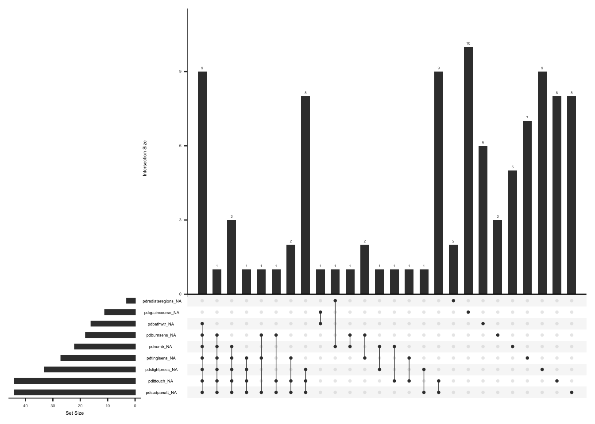
Handling missing data:
Missing values for the initial neuropathic pain related seven question can be imputed if the responses to 5 of 7 items are available (less than or equal to 29% missing data). The missing responses are first replaced with the average score of the completed items and then a total score is calculated by adding the scores for all the seven items. We will not impute missing values “pdqpaincourse” and “pdradiateregions” since these two follow up questions focus on pain patterns to differentiate between neuropathic and nociceptive pain (refer section 1.c).
We will create a variable “pdq_diff” and assign a value of 1 if there is a response to more than or equal to 5 of 7 Pdq items and 0 if there is a response to less than 5 of 7 Pdq items.
pdq_seven <- c("pdburnsens","pdtinglsens","pdlttouch","pdsudpanatt","pdbathwtr","pdnumb", "pdslightpress")
pdq <- pdq %>%
mutate(pdq_not_na = rowSums(!is.na(.[,pdq_seven]))) %>%
mutate(pdq_diff = case_when(pdq_not_na >= 5 ~ 1
,TRUE~0)) %>%
as_tibble() %>%
mutate(pdq_diff = as.factor(pdq_diff))We will now replace missing values with the rounded mean of remaining items if pdq_diff = 1 and calculate a score by taking a sum of the 7 neuropathic pain related items, we will call this “imputed_pdq_score.”
pdq <- pdq %>%
mutate(raw_pdq_score = rowSums(select(., all_of(pdq_seven)), na.rm = TRUE)) %>%
mutate(mean_pdq = case_when(pdq_diff == 1 ~ round(rowMeans(select(., all_of(pdq_seven)), na.rm = TRUE)))) %>%
mutate(across(all_of(pdq_seven), ~if_else(is.na(.),mean_pdq, .))) %>%
mutate(imputed_pdq_score = case_when(pdq_diff == 1 ~ rowSums(select(., all_of(pdq_seven)), na.rm = TRUE)))Check missingness pattern after imputation
pdq_zero_imputed <- pdq_zero %>%
mutate(pdq_not_na = rowSums(!is.na(.[,pdq_seven]))) %>%
mutate(pdq_diff = case_when(pdq_not_na >= 5 ~ 1
,TRUE~0)) %>%
as_tibble() %>%
mutate(pdq_diff = as.factor(pdq_diff)) %>%
mutate(mean_pdq = case_when(pdq_diff == 1 ~ round(rowMeans(select(., all_of(pdq_seven)), na.rm = TRUE)))) %>%
mutate(across(all_of(pdq_seven), ~if_else(is.na(.),mean_pdq, .))) %>%
select(-pdq_seven_score,-pdq_diff,-pdq_not_na,-mean_pdq)
gg_miss_upset(pdq_zero_imputed, nsets = n_var_miss(pdq_zero_imputed),order.by= "degree", point.size = 1, line.size = 0.25,
text.scale = c(0.5))
check distributions of PDQ scores before (raw_pdq_score) and after imputation (imputed_pdq_score)
pdq_plot <- pdq %>%
filter(between(pdq_not_na,5,7)) %>%
select(guid,raw_pdq_score,imputed_pdq_score) %>%
pivot_longer(cols =c("raw_pdq_score","imputed_pdq_score"), values_to = "score",names_to = "score_name")
ggplot(pdq_plot, aes(x=score_name,y=score, fill=score_name)) +
geom_violin(alpha=.25)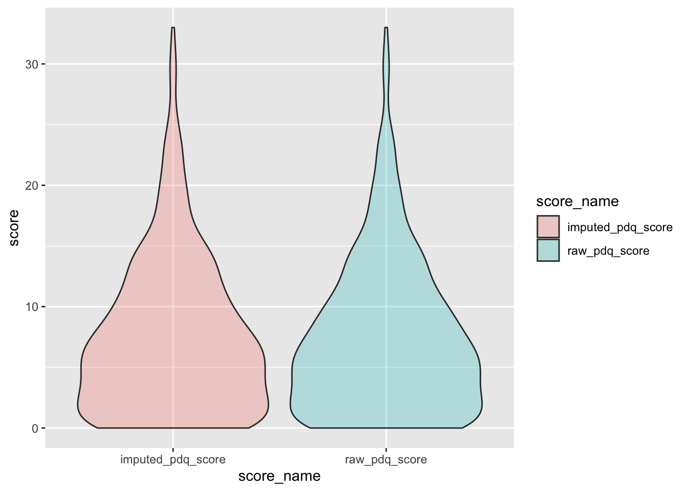
Remove intermediate field names not needed
pdq <- pdq %>%
select(-pdq_not_na,-mean_pdq,-raw_pdq_score)D.2.11.3 Scoring:
The scoring for pain behavior pattern (pdqpaincourse) and the pain radiation (pdradiateregions) is as follows(Freynhagen et al., 2006)[PainDETECT.pdf](https://www.oregon.gov/oha/HPA/dsi-pmc/PainCareToolbox/PainDETECT.pdf):
Freynhagen, R., Baron, R., Gockel, U., & Tölle, T. R. (2006). painDETECT: a new screening questionnaire to identify neuropathic components in patients with back pain. Current Medical Research and Opinion, 22(10), 1911–1920. https://doi.org/10.1185/030079906x132488

First we will recode values for “pdqpaincourse” and “pdradiateregions” according to the above table
We will then combine “pdqpaincourse”, “pdradiateregions” scores and the “imputed_pdq_score” to get the total score.
Recode values for “pdqpaincourse” and “pdradiateregions”, we will call these “pdqpaincourse_recoded” and “pdradiateregions_recoded”
pdq <- pdq %>%
mutate(pdqpaincourse_recoded = case_when(pdqpaincourse==1~0,
pdqpaincourse==2~-1,
pdqpaincourse==3~1,
pdqpaincourse==4~1,TRUE~pdqpaincourse)) %>%
mutate(pdradiateregions_recoded = case_when(pdradiateregions==0~0,
pdradiateregions==1~2,TRUE~pdradiateregions))Combine “pdqpaincourse_recoded”, “pdradiateregions_recoded” scores and the “imputed_pdq_score” to get the total score if all three scores are available, we will call this “pd_neuro_total_score”
pd_neuro <- c("pdqpaincourse_recoded","pdradiateregions_recoded","imputed_pdq_score")
pdq <- pdq %>%
mutate(pd_neuro_total_score = rowSums(select(., all_of(pd_neuro)), na.rm = FALSE)) %>%
mutate(pdqpaincourse_recoded = as.factor(pdqpaincourse_recoded)) %>%
mutate(pdradiateregions_recoded = as.factor(pdradiateregions_recoded ))D.2.11.4 New field name(s)
Add the field names “pdq_diff”,“pdqpaincourse_recoded”,“pdradiateregions_recoded”,“imputed_pdq_score”, and “pd_neuro_total_score” to the data dictionary
# Create field names
pdq_diff_new_row <- data.frame(
field_name = "pdq_diff",
form_name = "pain_detect_questionnaire_pdq",
field_type = "factor",
select_choices_or_calculations = "1, if there is a response to more than or equal to 5 of 7 PDQ neuropathic pain related items| 0, if there is a response to less than 5 of 7 items")
pdq_score_new_row <- data.frame(
field_name = "imputed_pdq_score",
form_name = "pain_detect_questionnaire_pdq",
field_type = "numeric",
field_label = "Sum of the 7 neuropathic pain related items by replacing missing values with the rounded mean of remaining items if pdq_diff = 1")
pdq_course_new_row <- data.frame(
field_name = "pdqpaincourse_recoded",
form_name = "pain_detect_questionnaire_pdq",
field_type = "factor",
select_choices_or_calculations = "0,Persistent pain with slight fluctuations|-1,Persistent pain with pain attacks|1,Pain attacks without pain between them|1,Pain attacks with pain between them")
pdq_radiate_new_row <- data.frame(
field_name = "pdradiateregions_recoded",
form_name = "pain_detect_questionnaire_pdq",
field_type = "factor",
select_choices_or_calculations = "0,No Radiating pains|2,Radiating pains")
pdq_neuro_score_new_row <- data.frame(
field_name = "pd_neuro_total_score",
form_name = "pain_detect_questionnaire_pdq",
field_type = "numeric",
field_label = "Sum of pdqpaincourse_recoded,pdradiateregions_recoded and the imputed_pdq_score if all three scores are available")
# adding rows
psy_soc_dict <- psy_soc_dict %>%
add_row(!!!pdq_diff_new_row, .after = match("pdradiateregions", psy_soc_dict$field_name))
psy_soc_dict <- psy_soc_dict %>%
add_row(!!!pdq_score_new_row, .after = match("pdradiateregions", psy_soc_dict$field_name))
psy_soc_dict <- psy_soc_dict %>%
add_row(!!!pdq_course_new_row, .after = match("pdradiateregions", psy_soc_dict$field_name))
psy_soc_dict <- psy_soc_dict %>%
add_row(!!!pdq_radiate_new_row, .after = match("pdradiateregions", psy_soc_dict$field_name))
psy_soc_dict <- psy_soc_dict %>%
add_row(!!!pdq_neuro_score_new_row, .after = match("pdradiateregions", psy_soc_dict$field_name))D.2.11.5 Save:
Save “pdq” and updated data dictionary as .csv files in the folder named “reformatted_pdq”
write_csv(pdq,file=here::here("data","Psychosocial","Reformatted","reformatted_pdq.csv"))
write_csv(psy_soc_dict,file=here::here("data","Psychosocial","Reformatted","updated_psy_soc_dictionary.csv"))D.2.12 Patient-Reported Outcomes Measurement Information System (PROMIS)
PROMIS instruments are based on item response theory (IRT), where the responses to a set of items measure a latent trait(Cella et al., 2010). PROMIS instruments can be scored accurately using the HealthMeasures Scoring Service found here. The A2PCS uses the following PROMIS instruments:
Cella, D., Riley, W., Stone, A., Rothrock, N., Reeve, B., Yount, S., Amtmann, D., Bode, R., Buysse, D., Choi, S., Cook, K., DeVellis, R., DeWalt, D., Fries, J. F., Gershon, R., Hahn, E. A., Lai, J.-S., Pilkonis, P., Revicki, D., … Hays, R. (2010). The Patient-Reported Outcomes Measurement Information System (PROMIS) developed and tested its first wave of adult self-reported health outcome item banks: 20052008. Journal of Clinical Epidemiology, 63(11), 1179–1194. https://doi.org/10.1016/j.jclinepi.2010.04.011
| Form Name |
|---|
| PROMIS SF v1.2 - Physical Function 8b |
| PROMIS SF v1.0 - Sleep Disturbance 6a (Sleep I) |
| PROMIS SF v1.0 - Fatigue 7a |
| PROMIS SF v2.0 - Emotional Support 6a |
| PROMIS SF v2.0 - Instrumental Support 6a |
D.2.13 Pain-Sleep Duration (Sleep II)
The Sleep II form measures the average number of hours and minutes of sleep each night during the past month(Buysse et al., 1989).
Buysse, D. J., Reynolds, C. F., Monk, T. H., Berman, S. R., & Kupfer, D. J. (1989). The Pittsburgh sleep quality index: A new instrument for psychiatric practice and research. Psychiatry Research, 28(2), 193–213. https://doi.org/10.1016/0165-1781(89)90047-4
D.2.13.1 Read in Data:
Read in psy_soc1 dataframe and select field names from the Sleep Duration data and keep completed forms, we will call “sleep_dur”
sleep_dur <- applyFilter("sleep",painsleep_duration_sleep_ii_complete) %>%
retype()D.2.13.2 Outliers:
Missing values for hours and minutes of sleep cannot be imputed. We will check the distribution of hours and minutes of sleep and check for outliers
par(mfrow = c(1,1))
boxplot(sleep_dur$sleepnighthourmindurhrs,
ylab = "Sleep Hours"
)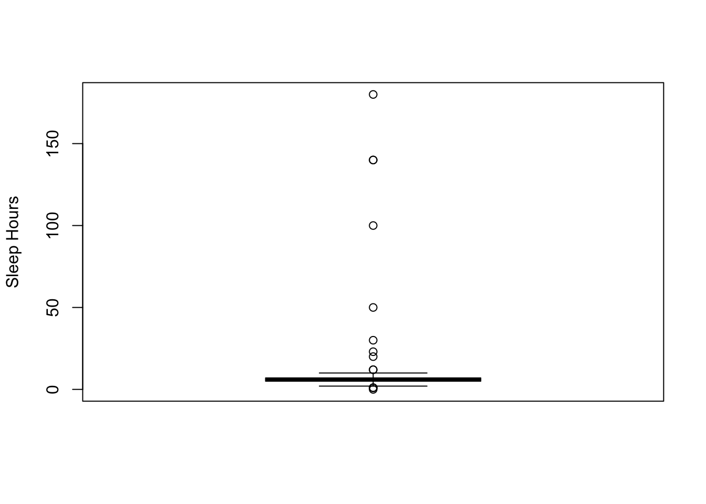
boxplot(sleep_dur$sleepnighthourmindurmins,
ylab = "Sleep Minutes"
)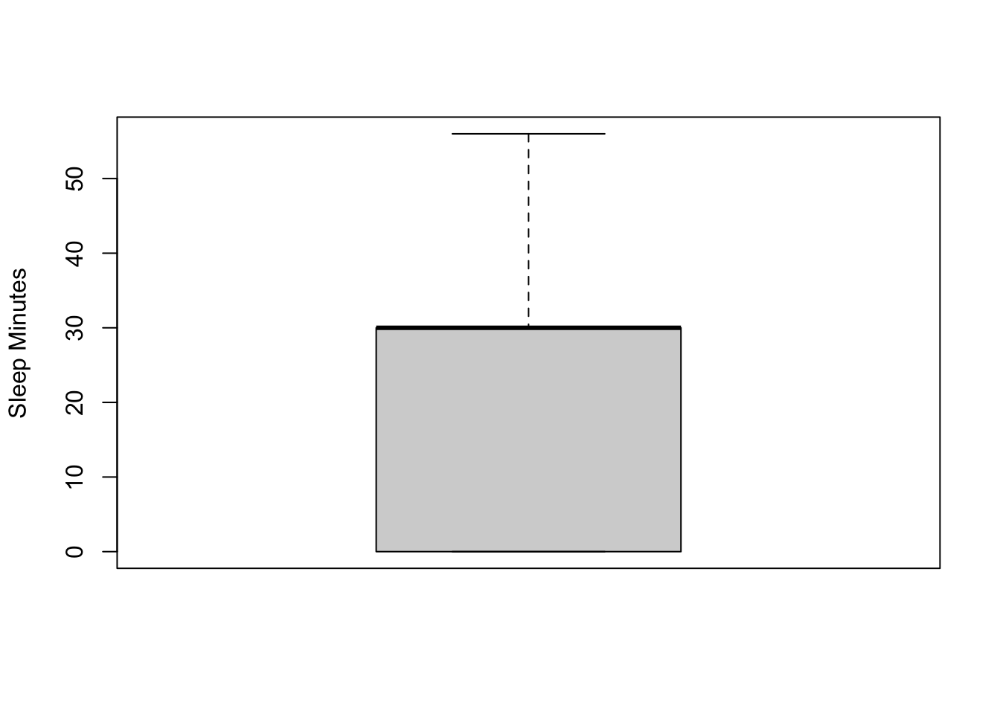
We will create a variable “sleep_outlier_hours” and assign a value of 0 if “sleepnighthourmindurhrs” is missing and “sleepnighthourmindurmins” is available, 1 if “sleepnighthourmindurhrs” is less than or equal to 23 (within range) and 2 if “sleepnighthourmindurhrs” is more than 23, and 4 if both “sleepnighthourmindurhrs” and “sleepnighthourmindurmins” are missing. We will not assign a value for missing “sleepnighthourmindurmins” for this variable since most people report sleep in hours, unless both “sleepnighthourmindurhrs” and “sleepnighthourmindurmins” are missing.
We will also create a variable “sleep_outlier_mins” and assign a value of 1 if “sleepnighthourmindurmins” is less than or equal to 59 (within range) and 2 if “sleepnighthourmindurmins” is more than 59 (out of range), and 3 if “sleepnighthourmindurmins” is missing.
sleep_dur <- sleep_dur %>%
mutate(sleep_outlier_hours = case_when(is.na(sleepnighthourmindurhrs) & !is.na (sleepnighthourmindurmins) ~ 0,
sleepnighthourmindurhrs <= 23 ~1,
sleepnighthourmindurhrs > 23 ~ 2,
is.na(sleepnighthourmindurhrs) & is.na (sleepnighthourmindurmins) ~4)) %>%
mutate(sleep_outlier_hours=as.factor(sleep_outlier_hours))
sleep_dur <- sleep_dur %>%
mutate(sleep_outlier_mins = case_when(
sleepnighthourmindurmins <= 59 ~1,
sleepnighthourmindurmins > 59 ~ 2, TRUE ~ 3)) %>%
mutate(sleep_outlier_mins=as.factor(sleep_outlier_mins))D.2.13.3 New field name(s)
Add the field names “sleep_outlier_hours” and “sleep_outlier_mins” to the data dictionary
# Create field names
sleep_hour_new_row <- data.frame(
field_name = "sleep_outlier_hours",
form_name = "painsleep_duration_sleep_ii",
field_type = "factor",
select_choices_or_calculations = "0, if sleepnighthourmindurhrs is missing and sleepnighthourmindurmins is available|1 if sleepnighthourmindurhrs is less than or equal to 23 (within range)|2,if sleepnighthourmindurhrs is more than 23 | 4, if both sleepnighthourmindurhrs and sleepnighthourmindurmins are missing")
sleep_mins_new_row <- data.frame(
field_name = "sleep_outlier_mins",
form_name = "painsleep_duration_sleep_ii",
field_type = "factor",
select_choices_or_calculations = "1 if sleepnighthourmindurmins is less than or equal to 59 (within range)|2, if sleepnighthourmindurmins is more than 59 (out of range)| 3 if sleepnighthourmindurmins is missing")
# adding rows
psy_soc_dict <- psy_soc_dict %>%
add_row(!!!sleep_hour_new_row, .after = match("sleepnighthourmindur", psy_soc_dict$field_name))
psy_soc_dict <- psy_soc_dict %>%
add_row(!!!sleep_mins_new_row, .after = match("sleepnighthourmindur", psy_soc_dict$field_name))D.2.13.4 Save:
Save “sleep_dur” and updated data dictionary as .csv files in the folder named “reformatted_sleep_dur”
write_csv(sleep_dur,file=here::here("data","Psychosocial","Reformatted","reformatted_sleep_dur.csv"))
write_csv(psy_soc_dict,file=here::here("data","Psychosocial","Reformatted","updated_psy_soc_dictionary.csv"))D.2.14 Pain Resilience Scale (PRS)
PRS is a 14-item scale that measures resilience during intense or prolonged pain(Slepian et al., 2016).
Each item is rated on a scale of 0 to 4, where 0 indicates “not at all” and 4 indicates “all the time.” The total score is calculated by summing up all 14 items, which can range from 0 to 56. Higher scores indicate greater pain related resilience. PRS also contains two sub scales(Slepian et al., 2016)
Behavioral Perseverance = sum of items 1-5
Cognitive/Affective positivity = sum of items 6-14
D.2.14.1 Read in Data:
Read in psy_soc1 dataframe and select field names from the PRS forms and keep completed forms, we will call this “prs”
prs <- applyFilter("prs",pain_resilience_scale_prs_complete)D.2.14.2 Behavioral Perseverance (items 1-5): Handling missing data and scoring
Missing data pattern in Behavioral Perseverance.
gg_miss_upset(prs %>%
select(prsbackoutscl,prsworkgoalsscl,prspushthroughscl,prscontworkscl,prsstayactivescl), nsets = n_var_miss(prs),order.by= "degree", point.size = 1, line.size = 0.25,
text.scale = c(0.5))
Missing values can be imputed if the responses to 4 of 5 items are available (less than or equal to 29% missing data).
The missing responses are first replaced with the average score of the completed items and then a total score is calculated by adding the scores for all the seven items
We will create a variable “prs_bhv_diff” and assign a value of 1 if there is a response to more than or equal to 4 of 5 behavioral perseverance items and 0 if there is a response to less than 4 of 5 items.
prs_bhv_five <- c("prsbackoutscl","prsworkgoalsscl","prspushthroughscl","prscontworkscl","prsstayactivescl")
prs <- prs %>%
mutate(prs_bhv_not_na = rowSums(!is.na(select(., all_of(prs_bhv_five))))) %>%
mutate(prs_bhv_diff = case_when(prs_bhv_not_na >= 4 ~ 1
,TRUE~0)) %>%
as_tibble() %>%
mutate(prs_bhv_diff = as.factor(prs_bhv_diff))We will now replace missing values with the rounded mean of remaining items if prs_bhv_diff = 1 and calculate a behavioral perseverance score by taking a sum of 5 associated item, we will call this “imputed_bhv_score.”
prs <- prs %>%
mutate(raw_bhv_score = rowSums(select(., all_of(prs_bhv_five)), na.rm = TRUE)) %>%
mutate(mean_bhv_prs = case_when(prs_bhv_diff == 1 ~ round(rowMeans(select(., all_of(prs_bhv_five)), na.rm = TRUE)))) %>%
mutate(across(all_of(prs_bhv_five), ~if_else(is.na(.),mean_bhv_prs, .))) %>%
mutate(imputed_bhv_score = case_when(prs_bhv_diff == 1 ~ rowSums(select(., all_of(prs_bhv_five)), na.rm = TRUE)))Check missingness pattern after imputation
gg_miss_upset(prs %>%
select(prsbackoutscl,prsworkgoalsscl,prspushthroughscl,prscontworkscl,prsstayactivescl), nsets = n_var_miss(prs),order.by= "degree", point.size = 1, line.size = 0.25,
text.scale = c(0.5))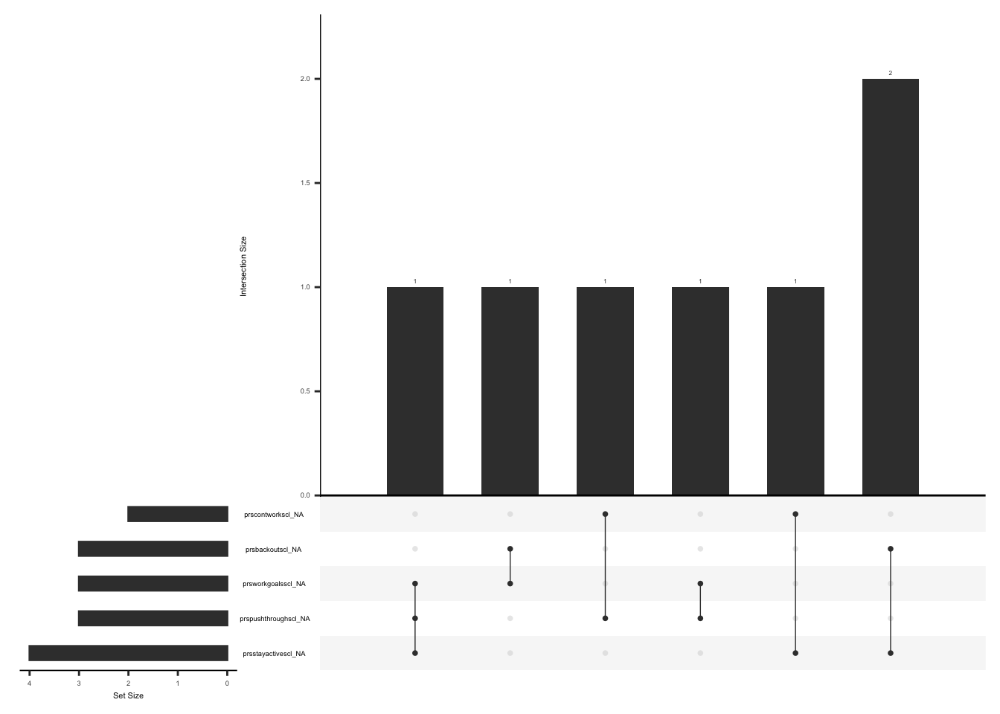
check distributions of behavioral perseverance scores before (raw_bhv_score) and after imputation (imputed_bhv_score)
prs_bhv_plot <- prs %>%
filter(between(prs_bhv_not_na,4,5)) %>%
select(guid,raw_bhv_score,imputed_bhv_score) %>%
pivot_longer(cols =c("raw_bhv_score","imputed_bhv_score"), values_to = "score",names_to = "score_name")
ggplot(prs_bhv_plot, aes(x=score_name,y=score, fill=score_name)) +
geom_violin(alpha=.25)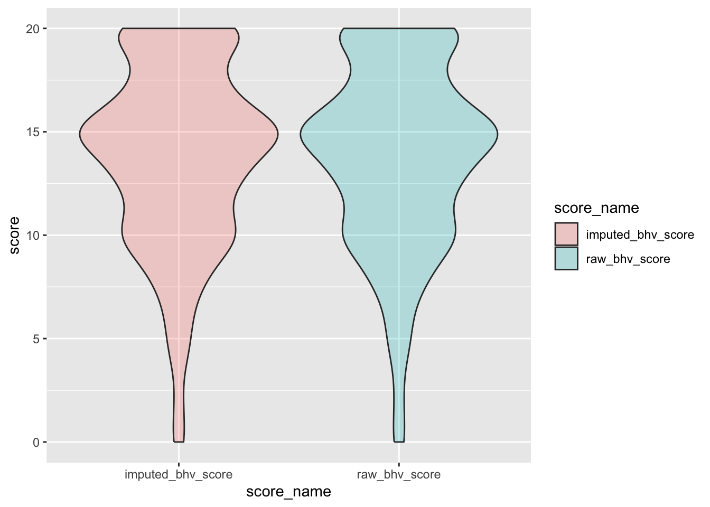
Remove intermediate field names not needed
prs <- prs %>%
select(-prs_bhv_not_na,-mean_bhv_prs,-raw_bhv_score)D.2.14.3 Cognitive/Affective positivity: Handling missing data and scoring
Missing Data Pattern
gg_miss_upset(prs %>%
select(prsfocuspositivescl,prsposattitudescl,prsnotaffecthappyscl,prsfindjoyscl,prshopefulscl,prsnotgetdownscl,prsnotupsetscl,prsavoidnegativescl,prsstayrelaxscl), nsets = n_var_miss(prs),order.by= "degree", point.size = 1, line.size = 0.25,
text.scale = c(0.5))Missing values can be imputed if the responses to 7 of 9 items are available (less than or equal to 29% missing data).
The missing responses are first replaced with the average score of the completed items and then a total score is calculated by adding the scores for all the seven items
We will create a variable “prs_cog_diff” and assign a value of 1 if there is a response to more than or equal to 7 of 9 Cognitive/Affective positivity items and 0 if there is a response to less than 7 of 9 items.
prs_cog_nine <- c("prsfocuspositivescl","prsposattitudescl","prsnotaffecthappyscl","prsfindjoyscl","prshopefulscl","prsnotgetdownscl","prsnotupsetscl","prsavoidnegativescl","prsstayrelaxscl")
prs <- prs %>%
mutate(prs_cog_not_na = rowSums(!is.na(.[,prs_cog_nine]))) %>%
mutate(prs_cog_diff = case_when(prs_cog_not_na >= 7 ~ 1
,TRUE~0)) %>%
as_tibble() %>%
mutate(prs_cog_diff = as.factor(prs_cog_diff))We will now replace missing values with the rounded mean of remaining items if prs_cog_diff = 1 and calculate a Cognitive/Affective positivity score by taking a sum of 9 associated item, we will call this “imputed_prs_cog_score.”
prs <- prs %>%
mutate(raw_prs_cog_score = rowSums(select(., all_of(prs_cog_nine)), na.rm = TRUE)) %>%
mutate(mean_cog_prs = case_when(prs_cog_diff == 1 ~ round(rowMeans(select(., all_of(prs_cog_nine)), na.rm = TRUE)))) %>%
mutate(across(all_of(prs_cog_nine), ~if_else(is.na(.),mean_cog_prs, .))) %>%
mutate(imputed_prs_cog_score = case_when(prs_cog_diff == 1 ~ rowSums(select(., all_of(prs_cog_nine)), na.rm = TRUE)))Check missingness pattern after imputation
gg_miss_upset(prs %>%
select(prsfocuspositivescl,prsposattitudescl,prsnotaffecthappyscl,prsfindjoyscl,prshopefulscl,prsnotgetdownscl,prsnotupsetscl,prsavoidnegativescl,prsstayrelaxscl), nsets = n_var_miss(prs),order.by= "degree", point.size = 1, line.size = 0.25,
text.scale = c(0.5))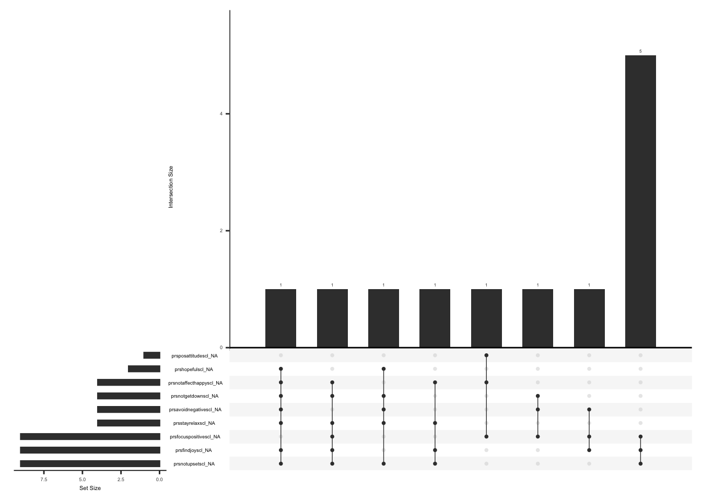
Check distributions Cognitive/Affective positivity scores before (raw_prs_cog_score) and after imputation (imputed_prs_cog_score)
prs_cog_plot <- prs %>%
filter(between(prs_cog_not_na,7,9)) %>%
select(guid,raw_prs_cog_score,imputed_prs_cog_score) %>%
pivot_longer(cols =c("raw_prs_cog_score","imputed_prs_cog_score"), values_to = "score",names_to = "score_name")
ggplot(prs_cog_plot, aes(x=score_name,y=score, fill=score_name)) +
geom_violin(alpha=.25)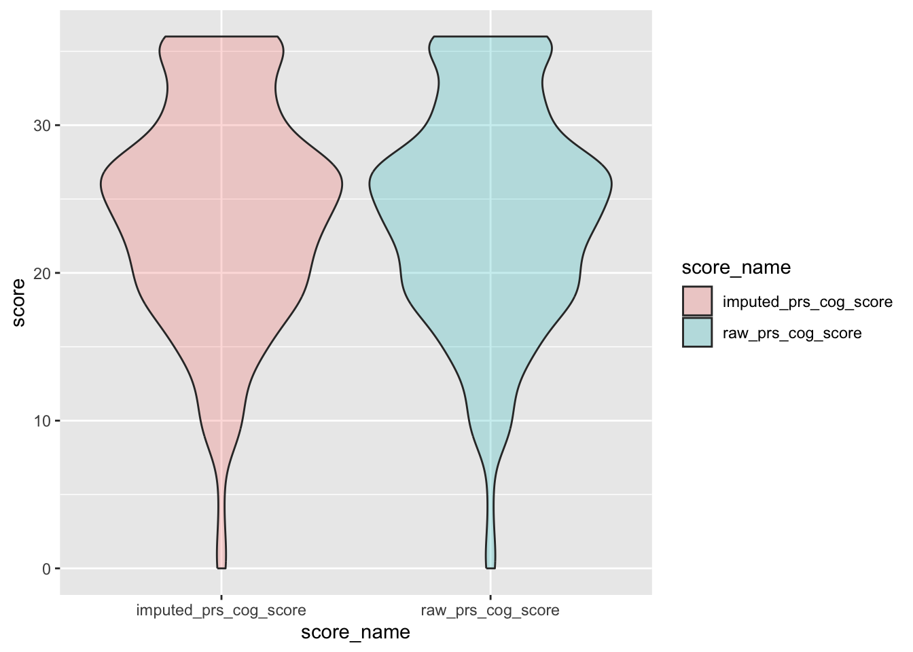
Remove intermediate field names not needed
prs <- prs %>%
select(-prs_cog_not_na,-mean_cog_prs,-raw_prs_cog_score)D.2.14.4 Total PRS Score: Handling missing data and scoring
Missing data pattern in prs.
gg_miss_upset(prs %>%
select(prsbackoutscl,prsworkgoalsscl,prspushthroughscl,prscontworkscl,prsstayactivescl,prsfocuspositivescl,prsposattitudescl,prsnotaffecthappyscl,prsfindjoyscl,prshopefulscl,prsnotgetdownscl,prsnotupsetscl,prsavoidnegativescl,prsstayrelaxscl), nsets = n_var_miss(prs),order.by= "degree", point.size = 1, line.size = 0.25,
text.scale = c(0.5))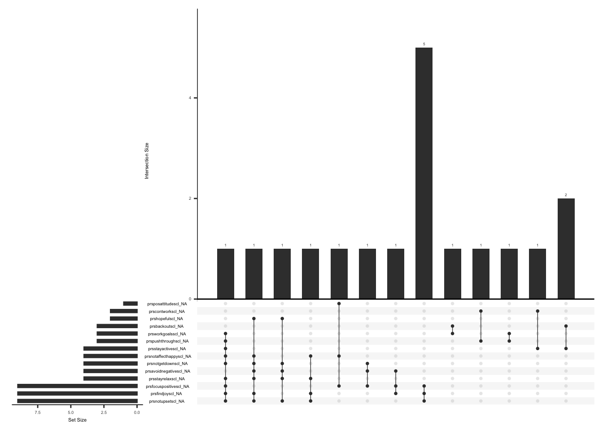
Handling missing data for total PRS score:
Missing values can be imputed if the responses to 10 of 14 items are available (less than or equal to 29% missing data).
Since the correlation between Behavioral Perseverance and Cognitive/Affective positivity is 0.76(Slepian et al., 2016) average score of the completed items can be used to impute missing values.
Slepian, P. M., Ankawi, B., Himawan, L. K., & France, C. R. (2016). Development and Initial Validation of the Pain Resilience Scale. The Journal of Pain, 17(4), 462–472. https://doi.org/10.1016/j.jpain.2015.12.010

The missing responses are first replaced with the average score of the completed items and then a total score is calculated by adding the scores for all the seven items
We will create a variable “prs_diff” and assign a value of 1 if there is a response to more than or equal to 10 of 14 PRS items and 0 if there is a response to less than 10 of 14 PRS items.
prs_fourteen <- c("prsbackoutscl","prsworkgoalsscl","prspushthroughscl","prscontworkscl","prsstayactivescl","prsfocuspositivescl","prsposattitudescl","prsnotaffecthappyscl","prsfindjoyscl","prshopefulscl","prsnotgetdownscl","prsnotupsetscl","prsavoidnegativescl","prsstayrelaxscl")
prs <- prs %>%
mutate(prs_not_na = rowSums(!is.na(.[,prs_fourteen]))) %>%
mutate(prs_diff = case_when(prs_not_na >= 10 ~ 1
,TRUE~0)) %>%
as_tibble() %>%
mutate(prs_diff = as.factor(prs_diff))We will now replace missing values with the rounded mean of remaining items if prs_diff = 1 and calculate a total score by taking a sum of all fourteen items, we will call this “imputed_prs_score.”
prs <- prs %>%
mutate(raw_prs_score = rowSums(select(., all_of(prs_fourteen)), na.rm = TRUE)) %>%
mutate(mean_prs = case_when(prs_diff == 1 ~ round(rowMeans(select(., all_of(prs_fourteen)), na.rm = TRUE)))) %>%
mutate(across(all_of(prs_fourteen), ~if_else(is.na(.),mean_prs, .))) %>%
mutate(imputed_prs_score = case_when(prs_diff == 1 ~ rowSums(select(., all_of(prs_fourteen)), na.rm = TRUE)))Check missingness pattern after imputation
gg_miss_upset(prs %>%
select(-ends_with("score"),-mean_prs,prs_not_na,-prs_diff,-pain_resilience_scale_prs_complete), nsets = n_var_miss(prs),order.by= "degree", point.size = 1, line.size = 0.25,
text.scale = c(0.5))
check distributions of total PRS scores before (raw_prs_score) and after imputation (imputed_prs_score)
prs_plot <- prs %>%
filter(between(prs_not_na,10,14)) %>%
select(guid,raw_prs_score,imputed_prs_score) %>%
pivot_longer(cols =c("raw_prs_score","imputed_prs_score"), values_to = "score",names_to = "score_name")
ggplot(prs_plot, aes(x=score_name,y=score, fill=score_name)) +
geom_violin(alpha=.25)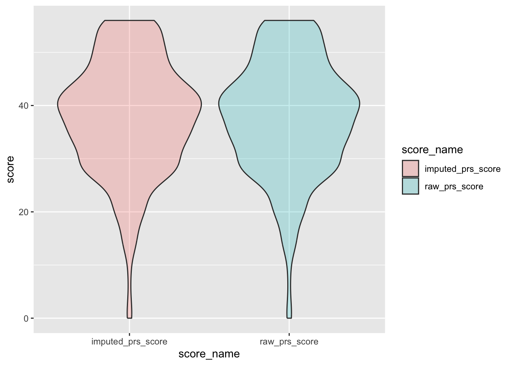
Remove intermediate field names not needed
prs <- prs %>%
select(-prs_not_na,-mean_prs,-raw_prs_score)D.2.14.5 New field name(s)
Add the following field names to the data dictionary:
“prs_diff”,“prs_cog_diff”,“prs_bhv_diff”,“imputed_bhv_score”,“imputed_prs_cog_score”,“imputed_prs_score”
# Create field names
prs_diff_new_row <- data.frame(
field_name = "prs_diff",
form_name = "pain_resilience_scale_prs",
field_type = "factor",
select_choices_or_calculations = "1,if there is a response to more than or equal to 10 of 14 PRS items | 0, if there is a response to less than 10 of 14 items")
prs_cog_diff_new_row <- data.frame(
field_name = "prs_cog_diff",
form_name = "pain_resilience_scale_prs",
field_type = "factor",
select_choices_or_calculations = "1, if there is a response to more than or equal to 7 of 9 Cognitive/Affective positivity related items | 0, if there is a response to less than 7 of 9 items")
prs_bhv_diff_new_row <- data.frame(
field_name = "prs_bhv_diff",
form_name = "pain_resilience_scale_prs",
field_type = "factor",
select_choices_or_calculations = "1,If there is a response to more than or equal to 4 of 5 behavioral perseverance related items| 0, if there is a response to less than 4 of 5 items")
prs_score_new_row <- data.frame(
field_name = "imputed_prs_score",
form_name = "pain_resilience_scale_prs",
field_type = "numeric",
field_label = "sum of all fourteen PRS items. Replacing missing values with the rounded mean of remaining items if prs_diff = 1")
prs_cog_score_new_row <- data.frame(
field_name = "imputed_prs_cog_score",
form_name = "pain_resilience_scale_prs",
field_type = "numeric",
field_label = "sum of all nine Cognitive/Affective positivity items. Replacing missing values with the rounded mean of remaining items if prs_cog_diff = 1")
prs_bhv_score_new_row <- data.frame(
field_name = "imputed_bhv_score",
form_name = "pain_resilience_scale_prs",
field_type = "numeric",
field_label = "sum of five behavioral perseverance items. Replacing missing values with the rounded mean of remaining items if prs_bhv_diff = 1")
# adding rows
psy_soc_dict <- psy_soc_dict %>%
add_row(!!!prs_diff_new_row, .after = match("prscognitivescore", psy_soc_dict$field_name))
psy_soc_dict <- psy_soc_dict %>%
add_row(!!!prs_cog_diff_new_row, .after = match("prscognitivescore", psy_soc_dict$field_name))
psy_soc_dict <- psy_soc_dict %>%
add_row(!!!prs_bhv_diff_new_row, .after = match("prscognitivescore", psy_soc_dict$field_name))
psy_soc_dict <- psy_soc_dict %>%
add_row(!!!prs_score_new_row, .after = match("prscognitivescore", psy_soc_dict$field_name))
psy_soc_dict <- psy_soc_dict %>%
add_row(!!!prs_cog_score_new_row, .after = match("prscognitivescore", psy_soc_dict$field_name))
psy_soc_dict <- psy_soc_dict %>%
add_row(!!!prs_bhv_score_new_row, .after = match("prscognitivescore", psy_soc_dict$field_name))D.2.14.6 Save:
Save “prs” and updated data dictionary as .csv files in the folder named “reformatted_prs”
write_csv(prs,file=here::here("data","Psychosocial","Reformatted","reformatted_prs.csv"))
write_csv(psy_soc_dict,file=here::here("data","Psychosocial","Reformatted","updated_psy_soc_dictionary.csv"))D.2.15 Multidimensional Inventory of Subjective Cognitive Impairment v1.0 (MISCI)
Multidimensional Inventory of Subjective Cognitive Impairment (MISCI) is used to evaluate cognitive function in Fibromyalgia patients. The MISCI comprises ten items based on a Likert scale ranging from 1-5. The initial six items evaluate perceived cognitive abilities and are positively phrased, while the remaining four items assess cognitive difficulties and are negatively phrased. Therefore, items 7-10 should be reverse-coded before being added to the responses of the other items to calculate the total score. The total score can range from 10-50, where higher scores indicate better perceived cognitive functioning (Kratz et al., 2015).
Kratz, A. L., Schilling, S. G., Goesling, J., & Williams, D. A. (2015). Development and Initial Validation of a Brief Self-Report Measure of Cognitive Dysfunction in Fibromyalgia. The Journal of Pain, 16(6), 527–536. https://doi.org/10.1016/j.jpain.2015.02.008
D.2.15.1 Read in Data:
Read in psy_soc1 dataframe and select field names from the MISCI form and keep completed forms, we will call “misci”
misci <- applyFilter("misci",multidimensional_inventory_of_subjective_cognitive_complete)We will reverse code the last four items which assess cognitive difficulties. For example, cognitive difficulty related question such as “trouble planning out steps of a task” is rated on a scale of 1 to 5 where 1 is “never” and 5 is “very often”. We will reverse code this to indicate 5 as “never” and 1 as “very often”. The structure will look as follows:
| Original | Reverse coded |
|---|---|
| 1 | 5 |
| 2 | 4 |
| 3 | 3 |
| 4 | 2 |
| 5 | 1 |
Reverse code last 4 items: We can accomplish this by subtracting the original values from 6.
misci <- misci %>%
mutate(miscishiftactivscl_reverse = 6-miscishiftactivscl) %>%
mutate(misciplanningscl_reverse = 6-misciplanningscl) %>%
mutate(misciexpressscl_reverse = 6-misciexpressscl) %>%
mutate(miscirightwordsscl_reverse = 6-miscirightwordsscl) D.2.15.2 Missing Data
Missing data pattern in “misci”.
misci_ten <- c("miscithinkclrscl","miscimindsharpscl","miscirememberscl","miscilearnscl","misciconcentratescl","misciattentionscl","miscishiftactivscl_reverse","misciplanningscl_reverse","misciexpressscl_reverse","miscirightwordsscl_reverse")
gg_miss_upset(misci %>%
select(all_of(misci_ten)), nsets = n_var_miss(misci),order.by= "degree", point.size = 1, line.size = 0.25,
text.scale = c(0.5))
Missing values can be imputed if the responses to 8 of 10 items are available (less than or equal to 29% missing data).
We will create a variable “misci_diff” and assign a value of 1 if there is a response to more than or equal to 8 of 10 items and 0 if there is a response to less than 8 of 10 items. The missing responses are first replaced with the average score of the completed items and then a total score is calculated by adding the scores for all the ten items.
misci <- misci %>%
mutate(misci_not_na = rowSums(!is.na(.[,misci_ten]))) %>%
mutate(misci_diff = case_when(misci_not_na >= 8 ~ 1
,TRUE~0)) %>%
as_tibble() %>%
mutate(misci_diff = as.factor(misci_diff))We will now replace missing values with the rounded mean of remaining items if misci_diff = 1 and calculate the total score by taking a sum of all ten items, we will call this “imputed_misci_score.”
misci <- misci %>%
mutate(raw_misci_score = rowSums(select(., all_of(misci_ten)), na.rm = TRUE)) %>%
mutate(mean_misci = case_when(misci_diff == 1 ~ round(rowMeans(select(., all_of(misci_ten)), na.rm = TRUE)))) %>%
mutate(across(all_of(misci_ten), ~if_else(is.na(.),mean_misci, .))) %>%
mutate(imputed_misci_score = case_when(misci_diff == 1 ~ rowSums(select(., all_of(misci_ten)), na.rm = TRUE))) Check missingness pattern after imputation
gg_miss_upset(misci %>%
select(all_of(misci_ten)), nsets = n_var_miss(misci),order.by= "degree", point.size = 1, line.size = 0.25,
text.scale = c(0.5))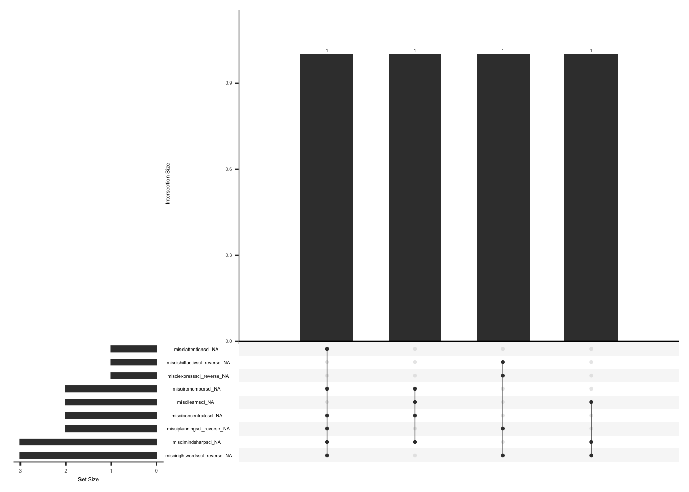
check distributions of misci total scores before (raw_misci_score) and after imputation (imputed_misci_score)
misci_plot <- misci %>%
filter(misci_diff==1) %>%
select(guid,raw_misci_score,imputed_misci_score) %>%
pivot_longer(cols =c("raw_misci_score","imputed_misci_score"), values_to = "score",names_to = "score_name")
ggplot( misci_plot, aes(x=score_name,y=score, fill=score_name)) +
geom_violin(alpha=.25)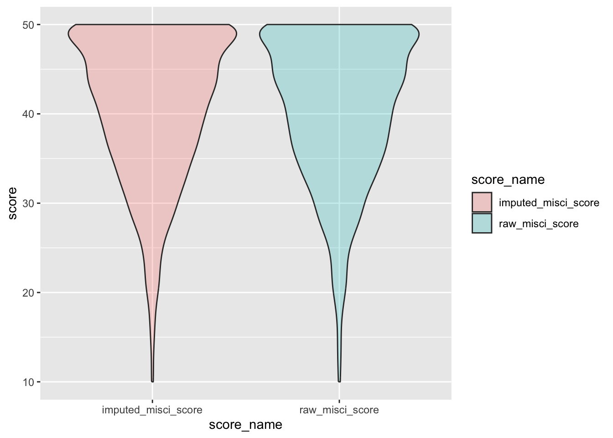
Remove intermediate field names not needed
misci <- misci %>%
select(-misci_not_na,-mean_misci,-raw_misci_score)D.2.15.3 New field name(s)
Add the following field names to the data dictionary:
“misci_diff”, “imputed_misci_score”, “miscishiftactivscl_reverse”, “misciplanningscl_reverse”, “misciexpressscl_reverse” and “miscirightwordsscl_reverse”
# Create field names
misci_diff_new_row <- data.frame(
field_name = "misci_diff",
form_name = "multidimensional_inventory_of_subjective_cognitive",
field_type = "factor",
select_choices_or_calculations = "1, if there is a response to more than or equal to 8 of 10 MISCI items | 0, if there is a response to less than 8 of 10 items")
misci_score_new_row <- data.frame(
field_name = "imputed_misci_score",
form_name = "multidimensional_inventory_of_subjective_cognitive",
field_type = "numeric",
field_label = "sum of all ten misci items. Replacing missing values with the rounded mean of remaining items if misci_diff = 1")
miscishiftactivscl_reverse_new_row <- data.frame(
field_name = "miscishiftactivscl_reverse",
form_name = "multidimensional_inventory_of_subjective_cognitive",
field_type = "numeric",
field_label = "reverse coded miscishiftactivscl")
misciplanningscl_reverse_new_row <- data.frame(
field_name = "misciplanningscl_reverse",
form_name = "multidimensional_inventory_of_subjective_cognitive",
field_type = "numeric",
field_label = "reverse coded misciplanningscl")
misciexpressscl_reverse_new_row <- data.frame(
field_name = "misciexpressscl_reverse",
form_name = "multidimensional_inventory_of_subjective_cognitive",
field_type = "numeric",
field_label = "reverse coded misciexpressscl")
miscirightwordsscl_reverse_new_row <- data.frame(
field_name = "miscirightwordsscl_reverse",
form_name = "multidimensional_inventory_of_subjective_cognitive",
field_type = "numeric",
field_label = "reverse coded miscirightwordsscl")
# adding rows
psy_soc_dict <- psy_soc_dict %>%
add_row(!!!misci_diff_new_row, .after = match("miscitotalscore", psy_soc_dict$field_name))
psy_soc_dict <- psy_soc_dict %>%
add_row(!!!misci_score_new_row, .after = match("miscitotalscore", psy_soc_dict$field_name))
psy_soc_dict <- psy_soc_dict %>%
add_row(!!!miscishiftactivscl_reverse_new_row, .after = match("miscitotalscore", psy_soc_dict$field_name))
psy_soc_dict <- psy_soc_dict %>%
add_row(!!!misciplanningscl_reverse_new_row, .after = match("miscitotalscore", psy_soc_dict$field_name))
psy_soc_dict <- psy_soc_dict %>%
add_row(!!!misciexpressscl_reverse_new_row, .after = match("miscitotalscore", psy_soc_dict$field_name))
psy_soc_dict <- psy_soc_dict %>%
add_row(!!!miscirightwordsscl_reverse_new_row, .after = match("miscitotalscore", psy_soc_dict$field_name))D.2.15.4 Save:
Save “misci” and updated data dictionary as .csv files in the folder named “reformatted_misci”
write_csv(misci,here("data","Psychosocial","Reformatted","reformatted_misci.csv"))
write_csv(psy_soc_dict,file=here::here("data","Psychosocial","Reformatted","updated_psy_soc_dictionary.csv"))D.2.16 The Big Five Inventory (BFI-2-S)
The BFI-2-S is is used to evaluate five personality domains and 15 specific facet traits within the five domains. Altogether, the BFI-2-S comprises thirty items based on a Likert scale ranging from 1-5, where 1 is “disagree strongly” and 5 is “agree strongly”. Some items are negatively phrased and should be reverse coded for scoring (Soto & John, 2017).
Soto, C. J., & John, O. P. (2017). Short and extra-short forms of the Big Five Inventory2: The BFI-2-S and BFI-2-XS. Journal of Research in Personality, 68, 69–81. https://doi.org/10.1016/j.jrp.2017.02.004
Following table shows the five domains and the specific facet traits:
| Domains (bold) and domain specific facets | Items (R: Items should be reverse coded) |
|---|---|
| Extraversion | |
| Sociability | 1R, 16 |
| Assertiveness | 6, 21R |
| Energy Level | 11, 26R |
| Agreeableness | |
| Compassion | 2, 17R |
| Respectfulness | 7R, 22 |
| Trust | 12, 27R |
| Conscientiousness | |
| Organization | 3R, 18 |
| Productiveness | 8R, 23 |
| Responsibility | 13, 28R |
| Negative Emotionality | |
| Anxiety | 4, 19R |
| Depression | 9, 24R |
| Emotional Volatility | 14R, 29 |
| Open-Mindedness | |
| Aesthetic Sensitivity | 5, 20R |
| Intellectual Curiosity | 10R, 25 |
| Creative Imagination | 15, 30R |
D.2.16.1 Read in Data:
Read in psy_soc1 dataframe and select field names from the BFI-2-S form and keep completed forms, we will call this “bfi”
bfi <- applyFilter("bfi",the_big_five_inventory_bfi2s_complete)We will reverse code the items denoted by “R” in the table. For example, Sociability related question such as “Tends to be quiet” is rated on a scale of 1 to 5 where 1 is “Disagree strongly” and 5 is “Agree strongly”. We will reverse code this to indicate 5 as “Disagree strongly” and 1 as “Agree strongly”. The structure will look as follows:
| Original | Reverse coded |
|---|---|
| 1 | 5 |
| 2 | 4 |
| 3 | 3 |
| 4 | 2 |
| 5 | 1 |
Reverse code the items denoted by “R”: We can accomplish this by subtracting the original values from 6.
bfi <- bfi %>%
mutate(
across(
.cols = c(
bfi2squietscl,
bfi2stakechargescl,
bfi2slessactivescl,
bfi2suncaringscl,
bfi2srudescl,
bfi2sfaultwithothersscl,
bfi2sdisorganizedscl,
bfi2sdifficultstartscl,
bfi2scarelessscl,
bfi2srelaxedscl,
bfi2ssecurescl,
bfi2sstableemotionscl,
bfi2sfewartinterestscl,
bfi2sllittleinterestscl,
bfi2slittlecreativityscl
),
.fns = \(x) 6 - x,
.names = "{.col}_reverse"
))
# credit: P.Sadil D.2.16.2 Extraversion
D.2.16.2.1 Missing Data
Missing data pattern in Extraversion domain specific items.
extra_vector <- c("bfi2squietscl_reverse","bfi2soutgoingscl","bfi2sdominantscl","bfi2stakechargescl_reverse","bfi2senergyscl","bfi2slessactivescl_reverse")
gg_miss_upset(bfi %>%
select(all_of(extra_vector)), nsets = n_var_miss(bfi),order.by= "degree", point.size = 1, line.size = 0.25,
text.scale = c(0.5))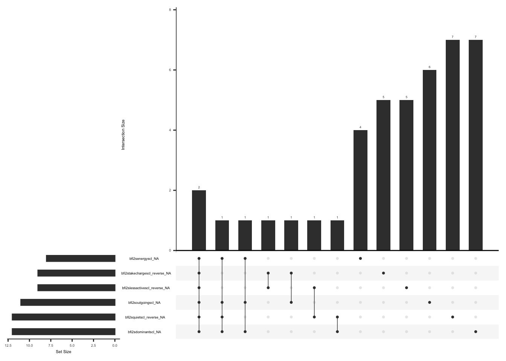
Scale score is calculated by taking the mean of the domain specific items. We will calculate raw scale score (without imputed items)
bfi <- bfi %>%
mutate(raw_extraversion_score = round(rowMeans(select(., all_of(extra_vector)), na.rm = TRUE)))For missing items, response to the closest item can be used. For instance if “Tends to be quiet” is missing, the value from “Is outgoing, sociable” can be used to replace the missing value or vice versa Berkeley personality lab.
Replace missing items with the closest matching item.
bfi <- bfi %>%
mutate(bfi2squietscl_reverse = ifelse(is.na(bfi2squietscl_reverse),bfi2soutgoingscl, bfi2squietscl_reverse),
bfi2soutgoingscl = ifelse(is.na(bfi2soutgoingscl),bfi2squietscl_reverse,bfi2soutgoingscl)) %>%
mutate(bfi2sdominantscl = ifelse(is.na(bfi2sdominantscl),bfi2stakechargescl_reverse, bfi2sdominantscl),
bfi2stakechargescl_reverse = ifelse(is.na(bfi2stakechargescl_reverse),bfi2sdominantscl,bfi2stakechargescl_reverse))%>%
mutate(bfi2senergyscl = ifelse(is.na(bfi2senergyscl),bfi2slessactivescl_reverse, bfi2senergyscl),
bfi2slessactivescl_reverse = ifelse(is.na(bfi2slessactivescl_reverse),bfi2senergyscl,bfi2slessactivescl_reverse))Check missingness pattern after imputation
gg_miss_upset(bfi %>%
select(all_of(extra_vector)), nsets = n_var_miss(bfi),order.by= "degree", point.size = 1, line.size = 0.25,
text.scale = c(0.5))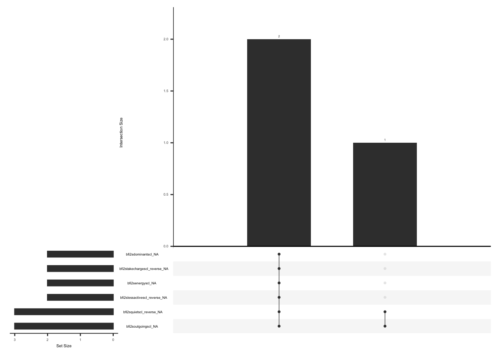
We will now calculate the imputed scale score
bfi <- bfi %>%
mutate(imputed_extraversion_score = round(rowMeans(select(., all_of(extra_vector)), na.rm = TRUE)))check distributions of extraversion scores before (raw_extraversion_score) and after imputation (imputed_extraversion_score)
bfi_ext_plot <- bfi %>%
select(guid,raw_extraversion_score,imputed_extraversion_score) %>%
pivot_longer(cols =c("raw_extraversion_score","imputed_extraversion_score"), values_to = "score",names_to = "score_name") %>%
mutate(score_name= as.factor(score_name)) %>%
mutate(score= as.factor(score)) %>%
group_by(score_name,score) %>%
count() %>%
ungroup %>%
rename(score_count = n)
ggplot(bfi_ext_plot, aes(x =score, y= score_count,fill=score_name)) +
geom_bar(position="dodge", stat="identity") +
theme(axis.text.x = element_text(angle = 70, vjust = 0.5, hjust=1)) 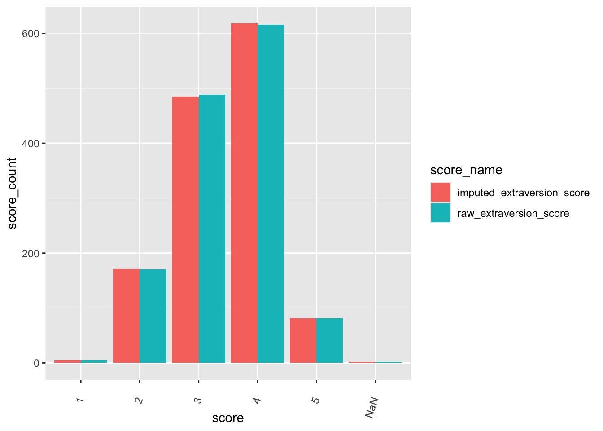
Remove intermediate field names not needed
bfi <- bfi %>%
select(-raw_extraversion_score)D.2.16.3 Agreeableness
D.2.16.3.1 Missing Data
Missing data pattern in agreeableness domain specific items.
agree_vector <- c("bfi2scompassionatescl","bfi2suncaringscl_reverse","bfi2srudescl_reverse","bfi2srespectfulscl","bfi2sassumingbestscl","bfi2sfaultwithothersscl_reverse")
gg_miss_upset(bfi %>%
select(all_of(agree_vector)), nsets = n_var_miss(bfi),order.by= "degree", point.size = 1, line.size = 0.25,
text.scale = c(0.5))
Scale score is calculated by taking the mean of the domain specific items. We will calculate raw scale score (without imputed items)
bfi <- bfi %>%
mutate(raw_agreeableness_score = round(rowMeans(select(., all_of(agree_vector)), na.rm = TRUE)))For missing items, response to the closest item can be used Berkeley personality lab.
Replace missing items with the closest matching item.
bfi <- bfi %>%
mutate(bfi2scompassionatescl = ifelse(is.na(bfi2scompassionatescl),bfi2suncaringscl_reverse, bfi2scompassionatescl),
bfi2suncaringscl_reverse = ifelse(is.na(bfi2suncaringscl_reverse),bfi2scompassionatescl,bfi2suncaringscl_reverse)) %>%
mutate(bfi2srudescl_reverse = ifelse(is.na(bfi2srudescl_reverse),bfi2srespectfulscl, bfi2srudescl_reverse),
bfi2srespectfulscl = ifelse(is.na(bfi2srespectfulscl),bfi2srudescl_reverse,bfi2srespectfulscl))%>%
mutate(bfi2sassumingbestscl = ifelse(is.na(bfi2sassumingbestscl),bfi2sfaultwithothersscl_reverse, bfi2sassumingbestscl),
bfi2sfaultwithothersscl_reverse = ifelse(is.na(bfi2sfaultwithothersscl_reverse),bfi2sassumingbestscl,bfi2sfaultwithothersscl_reverse))Check missingness pattern after imputation
gg_miss_upset(bfi %>%
select(all_of(agree_vector)), nsets = n_var_miss(bfi),order.by= "degree", point.size = 1, line.size = 0.25,
text.scale = c(0.5))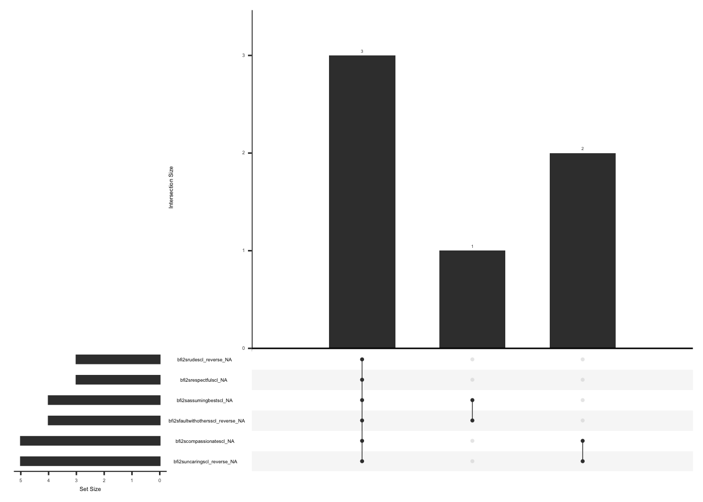
We will now calculate the imputed scale score
bfi <- bfi %>%
mutate(imputed_agreeableness_score = round(rowMeans(select(., all_of(agree_vector)), na.rm = TRUE)))check distributions of agreeableness scores before (raw_agreeableness_score) and after imputation (imputed_agreeableness_score)
bfi_agree_plot <- bfi %>%
select(guid,raw_agreeableness_score,imputed_agreeableness_score) %>%
pivot_longer(cols =c("raw_agreeableness_score","imputed_agreeableness_score"), values_to = "score",names_to = "score_name") %>%
mutate(score_name= as.factor(score_name)) %>%
mutate(score= as.factor(score)) %>%
group_by(score_name,score) %>%
count() %>%
ungroup %>%
rename(score_count = n)
ggplot(bfi_agree_plot, aes(x =score, y= score_count,fill=score_name)) +
geom_bar(position="dodge", stat="identity") +
theme(axis.text.x = element_text(angle = 70, vjust = 0.5, hjust=1)) 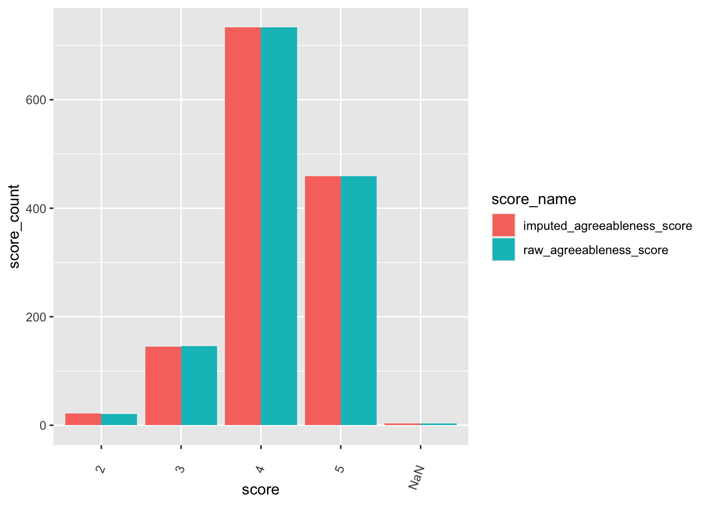
Remove intermediate field names not needed
bfi <- bfi %>%
select(-raw_agreeableness_score)D.2.16.4 Conscientiousness
D.2.16.4.1 Missing Data
Missing data pattern in conscientiousness domain specific items.
cons_vector <- c("bfi2sdisorganizedscl_reverse","bfi2stidyscl","bfi2sdifficultstartscl_reverse","bfi2spersistentscl","bfi2sreliablescl","bfi2scarelessscl_reverse")
gg_miss_upset(bfi %>%
select(all_of(cons_vector)), nsets = n_var_miss(bfi),order.by= "degree", point.size = 1, line.size = 0.25,
text.scale = c(0.5))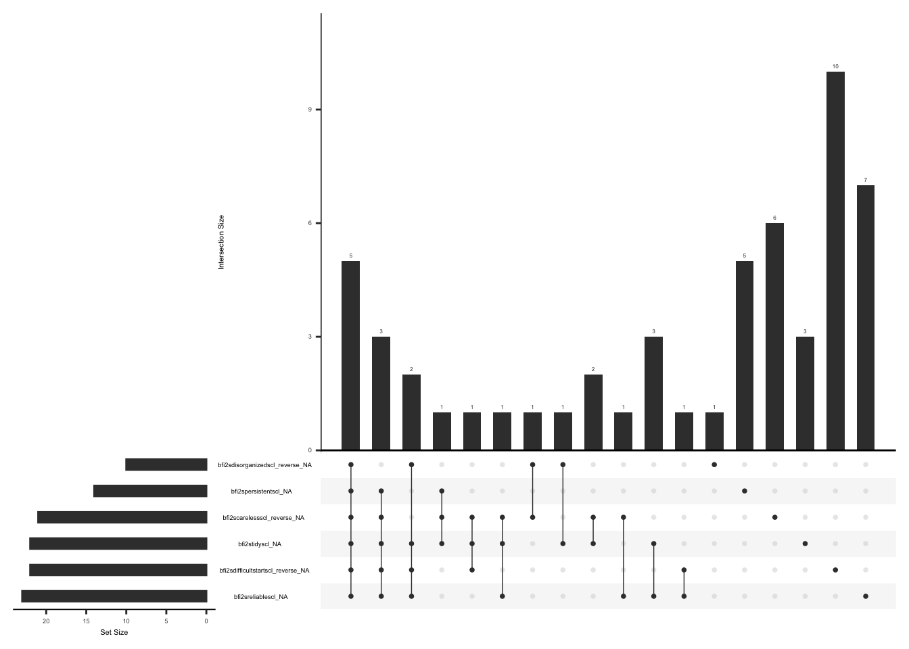
Scale score is calculated by taking the mean of the domain specific items. We will calculate raw scale score (without imputed items)
bfi <- bfi %>%
mutate(raw_cons_score = round(rowMeans(select(., all_of(cons_vector)), na.rm = TRUE)))For missing items response to the closest item can be used.Berkeley personality lab.
Replace missing items with the closest matching item.
bfi <- bfi %>%
mutate(bfi2sdisorganizedscl_reverse = ifelse(is.na(bfi2sdisorganizedscl_reverse),bfi2stidyscl,bfi2sdisorganizedscl_reverse),
bfi2stidyscl = ifelse(is.na(bfi2stidyscl),bfi2sdisorganizedscl_reverse,bfi2stidyscl)) %>%
mutate(bfi2sdifficultstartscl_reverse = ifelse(is.na(bfi2sdifficultstartscl_reverse),bfi2spersistentscl, bfi2sdifficultstartscl_reverse),
bfi2spersistentscl = ifelse(is.na(bfi2spersistentscl),bfi2sdifficultstartscl_reverse,bfi2spersistentscl))%>%
mutate(bfi2sreliablescl = ifelse(is.na(bfi2sreliablescl),bfi2scarelessscl_reverse, bfi2sreliablescl),
bfi2scarelessscl_reverse = ifelse(is.na(bfi2scarelessscl_reverse),bfi2sreliablescl,bfi2scarelessscl_reverse))Check missingness pattern after imputation
gg_miss_upset(bfi %>%
select(all_of(cons_vector)), nsets = n_var_miss(bfi),order.by= "degree", point.size = 1, line.size = 0.25,
text.scale = c(0.5))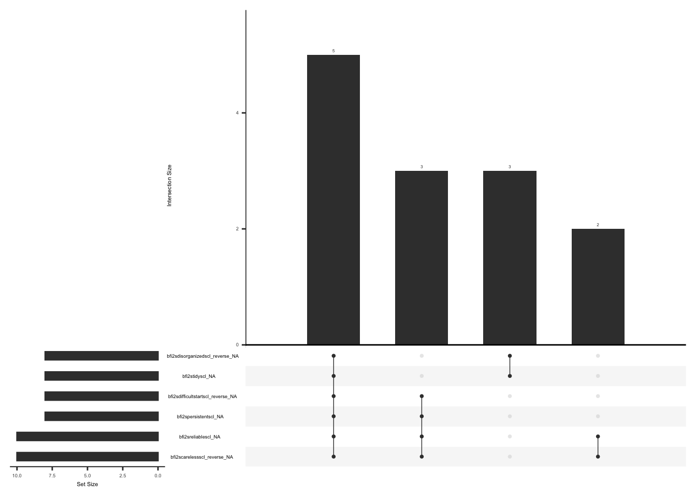
We will now calculate the imputed scale score
bfi <- bfi %>%
mutate(imputed_cons_score = round(rowMeans(select(., all_of(cons_vector)), na.rm = TRUE)))Check distributions of conscientiousness scores before (raw_cons_score) and after imputation (imputed_cons_score)
bfi_cons_plot <- bfi %>%
select(guid,raw_cons_score,imputed_cons_score) %>%
pivot_longer(cols =c("raw_cons_score","imputed_cons_score"), values_to = "score",names_to = "score_name") %>%
mutate(score_name= as.factor(score_name)) %>%
mutate(score= as.factor(score)) %>%
group_by(score_name,score) %>%
count() %>%
ungroup %>%
rename(score_count = n)
ggplot(bfi_cons_plot, aes(x =score, y= score_count,fill=score_name)) +
geom_bar(position="dodge", stat="identity") +
theme(axis.text.x = element_text(angle = 70, vjust = 0.5, hjust=1)) 
Remove intermediate field names not needed
bfi <- bfi %>%
select(-raw_cons_score)D.2.16.5 Negative Emotionality
D.2.16.5.1 Missing Data
Missing data pattern in negative emotionality domain specific items.
emotion_vector <- c("bfi2sworriesscl","bfi2srelaxedscl_reverse","bfi2sdepressedscl","bfi2ssecurescl_reverse","bfi2stemperamentalscl","bfi2sstableemotionscl_reverse")
gg_miss_upset(bfi %>%
select(all_of(emotion_vector)), nsets = n_var_miss(bfi),order.by= "degree", point.size = 1, line.size = 0.25,
text.scale = c(0.5))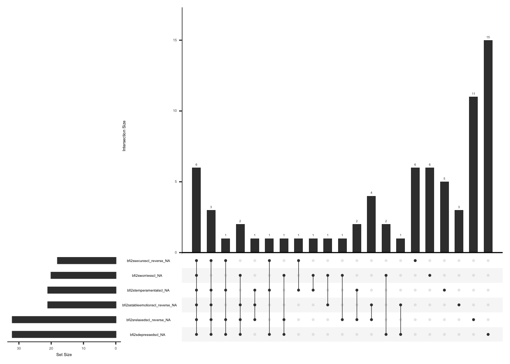
Scale score is calculated by taking the mean of the domain specific items. We will calculate raw scale score (without imputed items)
bfi <- bfi %>%
mutate(raw_emotional_score = round(rowMeans(select(., all_of(emotion_vector)), na.rm = TRUE)))For missing items response to the closest item can be used Berkeley personality lab.
Replace missing items with the closest matching item.
bfi <- bfi %>%
mutate(bfi2sworriesscl = ifelse(is.na(bfi2sworriesscl),bfi2srelaxedscl_reverse, bfi2sworriesscl),
bfi2srelaxedscl_reverse = ifelse(is.na(bfi2srelaxedscl_reverse),bfi2sworriesscl,bfi2srelaxedscl_reverse))%>%
mutate(bfi2sdepressedscl = ifelse(is.na(bfi2sdepressedscl),bfi2ssecurescl_reverse, bfi2sdepressedscl),
bfi2ssecurescl_reverse = ifelse(is.na(bfi2ssecurescl_reverse),bfi2sdepressedscl,bfi2ssecurescl_reverse))%>%
mutate(bfi2stemperamentalscl = ifelse(is.na(bfi2stemperamentalscl),bfi2sstableemotionscl_reverse, bfi2stemperamentalscl),
bfi2sstableemotionscl_reverse = ifelse(is.na(bfi2sstableemotionscl_reverse),bfi2stemperamentalscl,bfi2sstableemotionscl_reverse))Check missingness pattern after imputation
gg_miss_upset(bfi %>%
select(all_of(emotion_vector)), nsets = n_var_miss(bfi),order.by= "degree", point.size = 1, line.size = 0.25,
text.scale = c(0.5))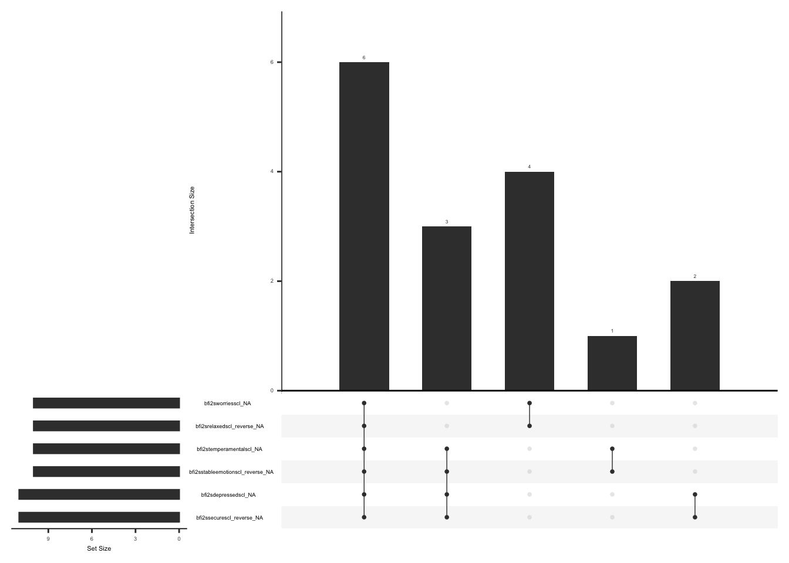
We will now calculate the imputed scale score
bfi <- bfi %>%
mutate(imputed_emotional_score = round(rowMeans(select(., all_of(emotion_vector)), na.rm = TRUE)))Check distributions negative emotionality scores before (raw_emotional_score) and after imputation (imputed_emotional_score).
bfi_emo_plot <- bfi %>%
select(guid,raw_emotional_score,imputed_emotional_score) %>%
pivot_longer(cols =c("raw_emotional_score","imputed_emotional_score"), values_to = "score",names_to = "score_name") %>%
mutate(score_name= as.factor(score_name)) %>%
mutate(score= as.factor(score)) %>%
group_by(score_name,score) %>%
count() %>%
ungroup %>%
rename(score_count = n)
ggplot(bfi_emo_plot, aes(x =score, y= score_count,fill=score_name)) +
geom_bar(position="dodge", stat="identity") +
theme(axis.text.x = element_text(angle = 70, vjust = 0.5, hjust=1)) 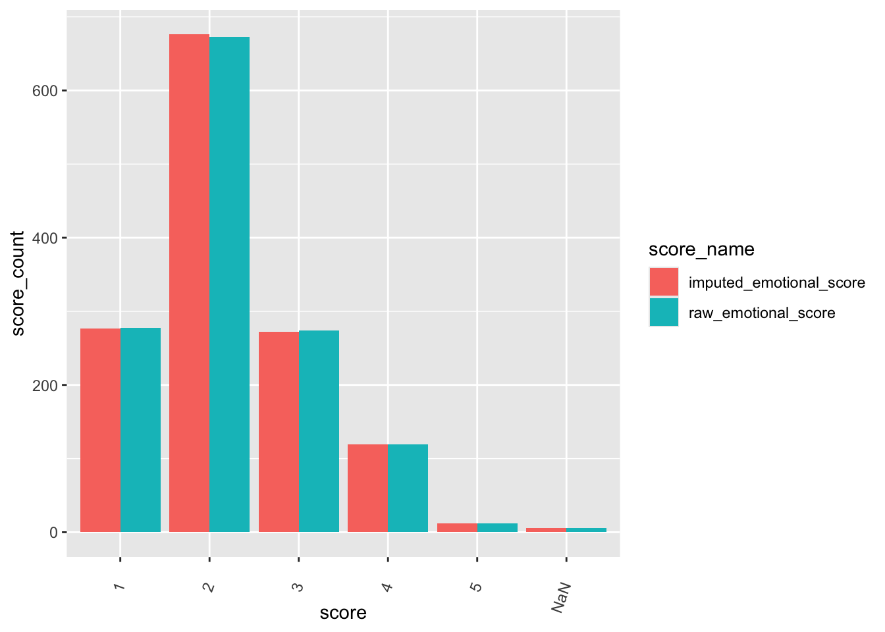
Remove intermediate field names not needed
bfi <- bfi %>%
select(-raw_emotional_score)D.2.16.6 Open-Mindedness
D.2.16.6.1 Missing Data
Missing data pattern in open-mindedness domain specific items.
open_vector <- c("bfi2sfascinatedscl","bfi2sfewartinterestscl_reverse",
"bfi2sllittleinterestscl_reverse","bfi2sthinkerscl","bfi2soriginalscl","bfi2slittlecreativityscl_reverse")
gg_miss_upset(bfi %>%
select(all_of(open_vector)), nsets = n_var_miss(bfi),order.by= "degree", point.size = 1, line.size = 0.25,
text.scale = c(0.5))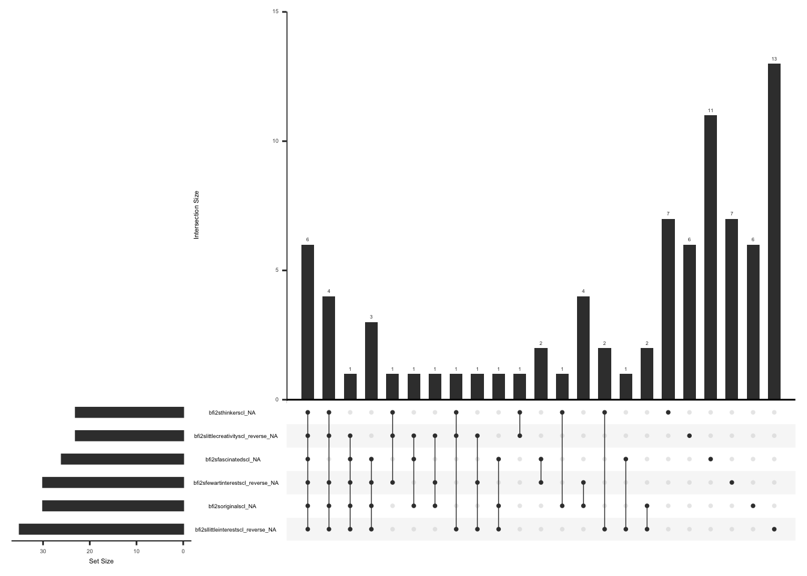
Scale score is calculated by taking the mean of the domain specific items. We will calculate raw scale score (without imputed items)
bfi <- bfi %>%
mutate(raw_open_score = round(rowMeans(select(., all_of(open_vector)), na.rm = TRUE)))For missing items response to the closest item can be used.Berkeley personality lab.
Replace missing items with the closest matching item.
bfi <- bfi %>%
mutate(bfi2sfascinatedscl = ifelse(is.na(bfi2sfascinatedscl),bfi2sfewartinterestscl_reverse,bfi2sfascinatedscl),
bfi2sfewartinterestscl_reverse = ifelse(is.na(bfi2sfewartinterestscl_reverse),bfi2sfascinatedscl,bfi2sfewartinterestscl_reverse)) %>%
mutate(bfi2sllittleinterestscl_reverse = ifelse(is.na(bfi2sllittleinterestscl_reverse),bfi2sthinkerscl, bfi2sllittleinterestscl_reverse),
bfi2sthinkerscl = ifelse(is.na(bfi2sthinkerscl),bfi2sllittleinterestscl_reverse,bfi2sthinkerscl))%>%
mutate(bfi2soriginalscl = ifelse(is.na(bfi2soriginalscl),bfi2slittlecreativityscl_reverse,bfi2soriginalscl),
bfi2slittlecreativityscl_reverse = ifelse(is.na(bfi2slittlecreativityscl_reverse),bfi2soriginalscl,bfi2slittlecreativityscl_reverse))Check missingness pattern after imputation
gg_miss_upset(bfi %>%
select(all_of(open_vector)), nsets = n_var_miss(bfi),order.by= "degree", point.size = 1, line.size = 0.25,
text.scale = c(0.5))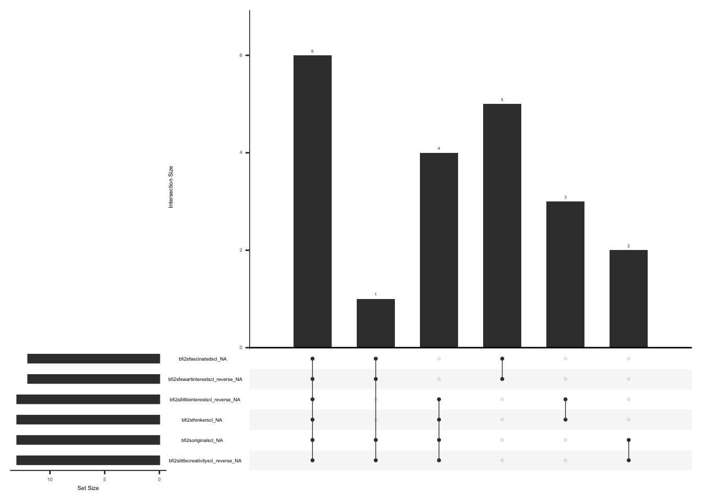
We will now calculate the imputed scale score
bfi <- bfi %>%
mutate(imputed_open_score = round(rowMeans(select(., all_of(open_vector)), na.rm = TRUE)))Check distributions of open-mindedness scores before (raw_open_score) and after imputation (imputed_open_score)
bfi_open_plot <- bfi %>%
select(guid,raw_open_score,imputed_open_score) %>%
pivot_longer(cols =c("raw_open_score","imputed_open_score"), values_to = "score",names_to = "score_name") %>%
mutate(score_name= as.factor(score_name)) %>%
mutate(score= as.factor(score)) %>%
group_by(score_name,score) %>%
count() %>%
ungroup %>%
rename(score_count = n)
ggplot(bfi_open_plot, aes(x =score, y= score_count,fill=score_name)) +
geom_bar(position="dodge", stat="identity") +
theme(axis.text.x = element_text(angle = 70, vjust = 0.5, hjust=1)) 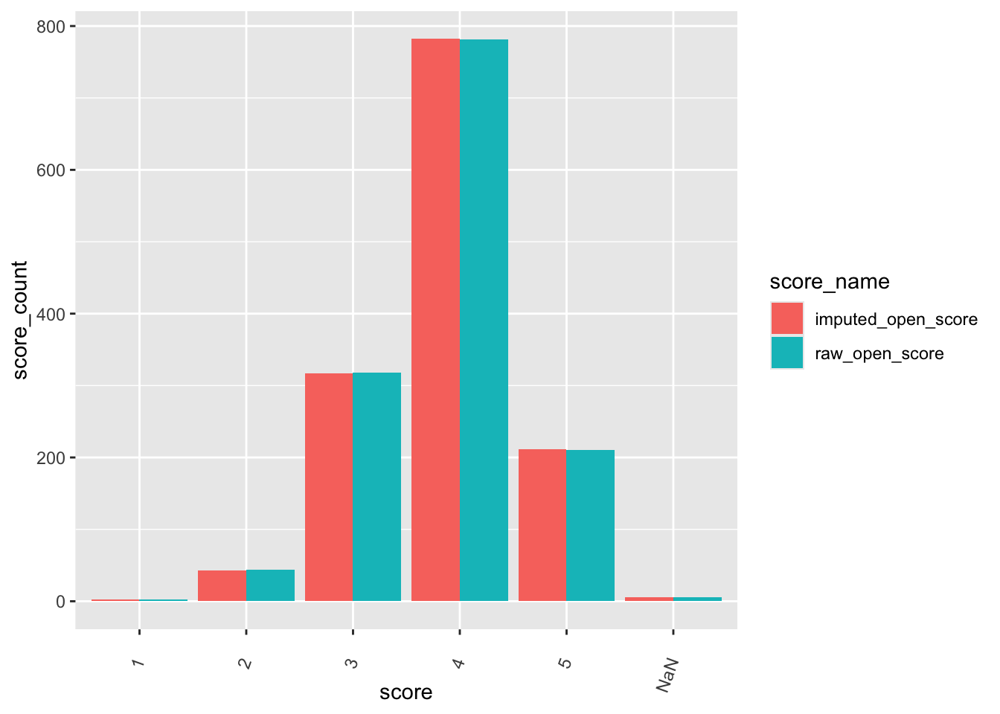
Remove intermediate field names not needed
bfi <- bfi %>%
select(-raw_open_score)D.2.16.7 New field name(s)
Add the following field names to the data dictionary:
“imputed_extraversion_score”, “imputed_agreeableness_score”, “imputed_cons_score”, “imputed_emotional_score”, “imputed_open_score”, “bfi2squietscl_reverse”, “bfi2stakechargescl_reverse”, “bfi2slessactivescl_reverse”, “bfi2suncaringscl_reverse”, “bfi2srudescl_reverse”, “bfi2sfaultwithothersscl_reverse”, “bfi2sdisorganizedscl_reverse”, “bfi2sdifficultstartscl_reverse”, “bfi2scarelessscl_reverse”, “bfi2srelaxedscl_reverse”, “bfi2ssecurescl_reverse”, “bfi2sstableemotionscl_reverse”, “bfi2sfewartinterestscl_reverse”, “bfi2sllittleinterestscl_reverse”, and “bfi2slittlecreativityscl_reverse”
# Create field names
extra_score_new_row <- data.frame(
field_name = "imputed_extraversion_score",
form_name = "the_big_five_inventory_bfi2s",
field_type = "numeric",
field_label = "Mean of Extraversion domain items. Replacing missing values with the value of the closest matching item (similar meaning)")
agree_score_new_row <- data.frame(
field_name = "imputed_agreeableness_score",
form_name = "the_big_five_inventory_bfi2s",
field_type = "numeric",
field_label = "Mean of Agreeableness domain items. Replacing missing values with the value of the closest matching item (similar meaning)")
cons_score_new_row <- data.frame(
field_name = "imputed_cons_score",
form_name = "the_big_five_inventory_bfi2s",
field_type = "numeric",
field_label = "Mean of conscientiousness domain items. Replacing missing values with the value of the closest matching item (similar meaning)")
emo_score_new_row <- data.frame(
field_name = "imputed_emotional_score",
form_name = "the_big_five_inventory_bfi2s",
field_type = "numeric",
field_label = "Mean of negative emotionality domain items. Replacing missing values with the value of the closest matching item (similar meaning)")
open_score_new_row <- data.frame(
field_name = "imputed_open_score",
form_name = "the_big_five_inventory_bfi2s",
field_type = "numeric",
field_label = "Mean of open-mindedness domain items. Replacing missing values with the value of the closest matching item (similar meaning)")
bfi2squietscl_new_row <- data.frame(
field_name = "bfi2squietscl_reverse",
form_name = "the_big_five_inventory_bfi2s",
field_type = "numeric",
field_label = "reverse coded bfi2squietscl")
bfi2stakechargescl_new_row <- data.frame(
field_name = "bfi2stakechargescl_reverse",
form_name = "the_big_five_inventory_bfi2s",
field_type = "numeric",
field_label = "reverse coded bfi2stakechargescl")
bfi2slessactivescl_new_row <- data.frame(
field_name = "bfi2slessactivescl_reverse",
form_name = "the_big_five_inventory_bfi2s",
field_type = "numeric",
field_label = "reverse coded bfi2slessactivescl")
bfi2suncaringscl_new_row <- data.frame(
field_name = "bfi2suncaringscl_reverse",
form_name = "the_big_five_inventory_bfi2s",
field_type = "numeric",
field_label = "reverse coded bfi2suncaringscl")
bfi2srudescl_new_row <- data.frame(
field_name = "bfi2srudescl_reverse",
form_name = "the_big_five_inventory_bfi2s",
field_type = "numeric",
field_label = "reverse coded bfi2srudescl")
bfi2sfaultwithothersscl_new_row <- data.frame(
field_name = "bfi2sfaultwithothersscl_reverse",
form_name = "the_big_five_inventory_bfi2s",
field_type = "numeric",
field_label = "reverse coded bfi2sfaultwithothersscl")
bfi2sdisorganizedscl_new_row <- data.frame(
field_name = "bfi2sdisorganizedscl_reverse",
form_name = "the_big_five_inventory_bfi2s",
field_type = "numeric",
field_label = "reverse coded bfi2sdisorganizedscl")
bfi2sdifficultstartscl_new_row <- data.frame(
field_name = "bfi2sdifficultstartscl_reverse",
form_name = "the_big_five_inventory_bfi2s",
field_type = "numeric",
field_label = "reverse coded bfi2sdifficultstartscl")
bfi2scarelessscl_new_row <- data.frame(
field_name = "bfi2scarelessscl_reverse",
form_name = "the_big_five_inventory_bfi2s",
field_type = "numeric",
field_label = "reverse coded bfi2scarelessscl")
bfi2srelaxedscl_new_row <- data.frame(
field_name = "bfi2srelaxedscl_reverse",
form_name = "the_big_five_inventory_bfi2s",
field_type = "numeric",
field_label = "reverse coded bfi2srelaxedscl")
bfi2ssecurescl_new_row <- data.frame(
field_name = "bfi2ssecurescl_reverse",
form_name = "the_big_five_inventory_bfi2s",
field_type = "numeric",
field_label = "reverse coded bfi2ssecurescl")
bfi2sstableemotionscl_new_row <- data.frame(
field_name = "bfi2sstableemotionscl_reverse",
form_name = "the_big_five_inventory_bfi2s",
field_type = "numeric",
field_label = "reverse coded bfi2sstableemotionscl")
bfi2sfewartinterestscl_reverse_new_row <- data.frame(
field_name = "bfi2sfewartinterestscl_reverse",
form_name = "the_big_five_inventory_bfi2s",
field_type = "numeric",
field_label = "reverse coded bfi2sfewartinterestscl")
bfi2sllittleinterestscl_reverse_new_row <- data.frame(
field_name = "bfi2sllittleinterestscl_reverse",
form_name = "the_big_five_inventory_bfi2s",
field_type = "numeric",
field_label = "reverse coded bfi2sllittleinterestscl")
bfi2slittlecreativityscl_reverse_new_row <- data.frame(
field_name = "bfi2slittlecreativityscl_reverse",
form_name = "the_big_five_inventory_bfi2s",
field_type = "numeric",
field_label = "reverse coded bfi2slittlecreativityscl")# adding rows
psy_soc_dict <- psy_soc_dict %>%
add_row(!!!extra_score_new_row, .after = match("bfi2slittlecreativityscl", psy_soc_dict$field_name))
psy_soc_dict <- psy_soc_dict %>%
add_row(!!!agree_score_new_row, .after = match("bfi2slittlecreativityscl", psy_soc_dict$field_name))
psy_soc_dict <- psy_soc_dict %>%
add_row(!!!cons_score_new_row, .after = match("bfi2slittlecreativityscl", psy_soc_dict$field_name))
psy_soc_dict <- psy_soc_dict %>%
add_row(!!!emo_score_new_row, .after = match("bfi2slittlecreativityscl", psy_soc_dict$field_name))
psy_soc_dict <- psy_soc_dict %>%
add_row(!!!open_score_new_row, .after = match("bfi2slittlecreativityscl", psy_soc_dict$field_name))
psy_soc_dict <- psy_soc_dict %>%
add_row(!!!bfi2squietscl_new_row, .after = match("bfi2slittlecreativityscl", psy_soc_dict$field_name))
psy_soc_dict <- psy_soc_dict %>%
add_row(!!!bfi2stakechargescl_new_row, .after = match("bfi2slittlecreativityscl", psy_soc_dict$field_name))
psy_soc_dict <- psy_soc_dict %>%
add_row(!!!bfi2slessactivescl_new_row, .after = match("bfi2slittlecreativityscl", psy_soc_dict$field_name))
psy_soc_dict <- psy_soc_dict %>%
add_row(!!!bfi2suncaringscl_new_row, .after = match("bfi2slittlecreativityscl", psy_soc_dict$field_name))
psy_soc_dict <- psy_soc_dict %>%
add_row(!!!bfi2srudescl_new_row, .after = match("bfi2slittlecreativityscl", psy_soc_dict$field_name))
psy_soc_dict <- psy_soc_dict %>%
add_row(!!!bfi2sfaultwithothersscl_new_row, .after = match("bfi2slittlecreativityscl", psy_soc_dict$field_name))
psy_soc_dict <- psy_soc_dict %>%
add_row(!!!bfi2sdisorganizedscl_new_row, .after = match("bfi2slittlecreativityscl", psy_soc_dict$field_name))
psy_soc_dict <- psy_soc_dict %>%
add_row(!!!bfi2sdifficultstartscl_new_row, .after = match("bfi2slittlecreativityscl", psy_soc_dict$field_name))
psy_soc_dict <- psy_soc_dict %>%
add_row(!!!bfi2scarelessscl_new_row, .after = match("bfi2slittlecreativityscl", psy_soc_dict$field_name))
psy_soc_dict <- psy_soc_dict %>%
add_row(!!!bfi2srelaxedscl_new_row, .after = match("bfi2slittlecreativityscl", psy_soc_dict$field_name))
psy_soc_dict <- psy_soc_dict %>%
add_row(!!!bfi2ssecurescl_new_row, .after = match("bfi2slittlecreativityscl", psy_soc_dict$field_name))
psy_soc_dict <- psy_soc_dict %>%
add_row(!!!bfi2sstableemotionscl_new_row, .after = match("bfi2slittlecreativityscl", psy_soc_dict$field_name))
psy_soc_dict <- psy_soc_dict %>%
add_row(!!!bfi2sfewartinterestscl_reverse_new_row, .after = match("bfi2slittlecreativityscl", psy_soc_dict$field_name))
psy_soc_dict <- psy_soc_dict %>%
add_row(!!!bfi2sllittleinterestscl_reverse_new_row, .after = match("bfi2slittlecreativityscl", psy_soc_dict$field_name))
psy_soc_dict <- psy_soc_dict %>%
add_row(!!!bfi2slittlecreativityscl_reverse_new_row, .after = match("bfi2slittlecreativityscl", psy_soc_dict$field_name))D.2.16.8 Save:
Save “bfi” and updated data dictionary as .csv files in the folder named “reformatted_bfi”
write_csv(bfi,file=here::here("data","Psychosocial","Reformatted","reformatted_bfi.csv"))
write_csv(psy_soc_dict,file=here::here("data","Psychosocial","Reformatted","updated_psy_soc_dictionary.csv"))D.2.17 Danish Thoracic Surgery Questionnaire v0.2
The Danish Thoracic Surgery Questionnaire comprises 17 items to assess functional impairment experienced post thoracotomy. each item is rated on a scale of 0 to 4, where 0 indicates no impairment due to pain and 4 indicates complete impairement due to pain. There is an additional indicator “I never do this activity” for each item. The total score is calculated as the sum of all seventeen items[Ringsted et al. (2013)](Bayman, 2017)
Ringsted, T. K., Wildgaard, K., Kreiner, S., & Kehlet, H. (2013). Pain-related Impairment of Daily Activities After Thoracic Surgery. The Clinical Journal of Pain, 29(9), 791–799. https://doi.org/10.1097/ajp.0b013e318278d4e2
Bayman, E. O. (2017). Pain-Related Limitations in Daily Activities Following Thoracic Surgery in a United States Population. Pain Physician, 3(20;3), E367–E378. https://doi.org/10.36076/ppj.2017.e378
D.2.17.1 Read in Data:
Read in psy_soc1 dataframe and select field names from the The Danish Thoracic Surgery Questionnaire data and keep completed forms. Keeping completed forms will subset to the thoracotomy cohort by default, we will call “dts”
dts <- applyFilter("dts",danish_thoracic_surgery_questionnaire_v02_complete)D.2.17.2 Missing Data:
Missing data pattern in dts.
gg_miss_upset(dts, nsets = n_var_miss(dts),order.by= "degree", point.size = 1, line.size = 0.25,
text.scale = c(0.5))
Handling missing data:
In case of missing values, a total score can be calculated if responses to 13 of 17 items are available (0.29 x 17 = 4.93). The missing responses are first replaced with the average score of the completed items and then a total score is calculated by adding the scores for all the 17 items(refer to section 1.c).
We will create a variable “dts_diff” and assign a value of 1 if there is a response to more than or equal to 13 of 17 DTS items and 0 if there is a response to less than 13 of 17 DTS items.
dts_vector <- c("dtsrunningscl","dtscarryingscl", "dtswashingscl","dtscleaningscl","dtswalkingscl" , "dtsstairsscl","dtskneelingscl","dtsstandingscl","dtsoutofbedscl","dtsswimmingscl","dtscyclingscl","dtsdrivingscl","dtslyingopsidescl","dtscoughingscl","dtssittingscl","dtswatchtvscl","dtssleepscl")
dts <- dts %>%
mutate(dts_not_na = rowSums(!is.na(.[,dts_vector]))) %>%
mutate(dts_diff = case_when(dts_not_na >= 13 ~ 1
,TRUE~0)) %>%
as_tibble() %>%
mutate(dts_diff = as.factor(dts_diff))We will now replace missing values with the rounded mean of remaining items if dts_diff = 1 i.e if 13 of 17 items are available and calculate the total score by taking a sum of all the items. We will exclude responses indicated by a “96” i.e. “I never do this activity” from all calculations.
dts <- dts %>%
mutate(raw_dts_score = rowSums(select(., all_of(dts_vector)) * (select(., all_of(dts_vector)) != 96), na.rm = TRUE)) %>%
mutate(
mean_dts = case_when(
dts_diff == 1 ~ round(rowMeans(select(., all_of(dts_vector)) * (select(., all_of(dts_vector)) != 96), na.rm = TRUE)))) %>%
mutate(across(all_of(dts_vector), ~if_else(is.na(.),mean_dts, .))) %>%
mutate(imputed_dts_score = case_when(dts_diff == 1 ~ rowSums(select(., all_of(dts_vector)) * (select(., all_of(dts_vector)) != 96), na.rm = TRUE)))Check missingness pattern after imputation
gg_miss_upset(dts %>%
select(-imputed_dts_score,-mean_dts), nsets = n_var_miss(dts),order.by= "degree", point.size = 1, line.size = 0.25,
text.scale = c(0.5))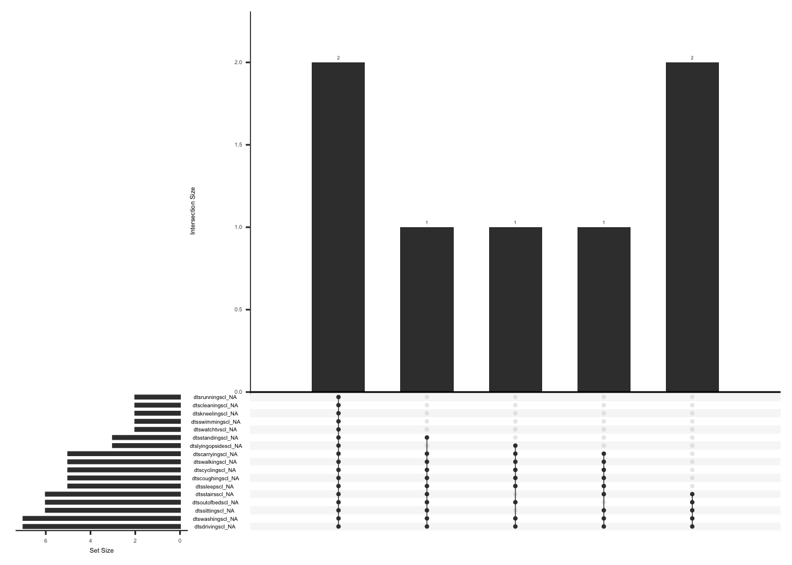
Check distributions of DTS scores before (raw_dts_score) and after imputation (imputed_dts_score)
dts_plot <- dts %>%
filter(between(dts_not_na,13,17)) %>%
select(guid,raw_dts_score,imputed_dts_score) %>%
pivot_longer(cols =c("raw_dts_score","imputed_dts_score"), values_to = "score",names_to = "score_name")
ggplot(dts_plot, aes(x=score_name,y=score, fill=score_name)) +
geom_violin(alpha=.25)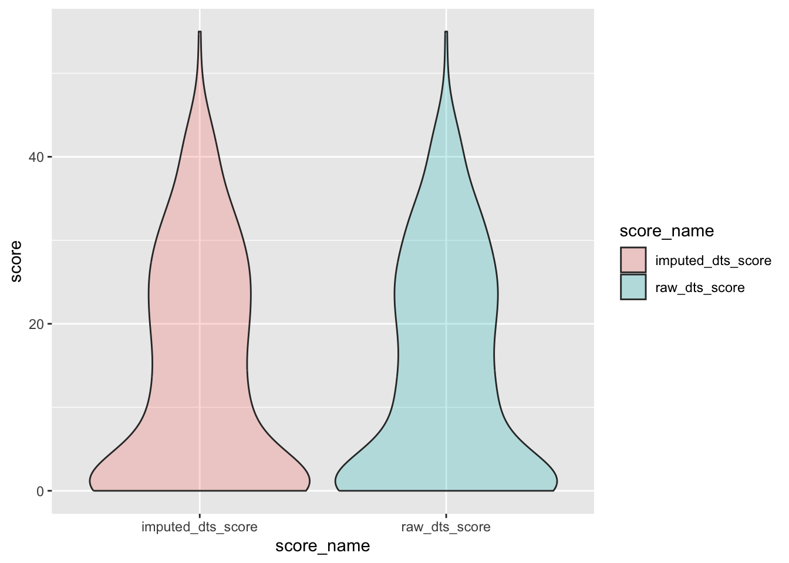
Remove intermediate field names not needed
dts <- dts %>%
select(-dts_not_na,-mean_dts,raw_dts_score)D.2.17.3 New field name(s):
Add the field names “dts_diff” and “imputed_dts_score”to the data dictionary
# Create field names
dts_diff_new_row <- data.frame(
field_name = "dts_diff",
form_name = "danish_thoracic_surgery_questionnaire_v02",
field_type = "factor",
select_choices_or_calculations = "1, if there is a response to more than or equal to 13 of 17 DTS items|0, if there is a response to less than 13 of 16 DTS items")
dts_score_new_row <- data.frame(
field_name = "imputed_dts_score",
form_name = "danish_thoracic_surgery_questionnaire_v02",
field_type = "numeric",
field_label = "A higher score indicates a higher degree of functional impairment due to pain",
field_note= "The missing responses are first replaced with the average score of the completed items and then a total score is calculated by adding the scores for all the items, responses indicated by 96 were excluded from the total score")
# adding fabq_diff
psy_soc_dict <- psy_soc_dict %>%
add_row(!!!dts_diff_new_row, .after = match("dtssleepscl", psy_soc_dict$field_name))
# imputed fabq score
psy_soc_dict <- psy_soc_dict %>%
add_row(!!!dts_score_new_row, .after = match("dtssleepscl", psy_soc_dict$field_name)) D.2.17.4 Save:
Save “dts” and updated data dictionary as .csv files in the folder named “reformatted_dts”
write_csv(dts,file=here::here("data","Psychosocial","Reformatted","reformatted_dts.csv"))
write_csv(psy_soc_dict,file=here::here("data","Psychosocial","Reformatted","updated_psy_soc_dictionary.csv"))D.2.18 Rapid Assessment of Physical Activity v1.0 (RAPA)
The Rapid Assessment of Physical Activity Questionnaire comprises 9 items to assess physical activity in subject over 50 years of age. The first 7 items measure aerobic activity and the last 2 items measure strength/flexibility. Each item has a yes/no response (Topolski et al., 2006). Here we well compute aerobic activity score based on the highest affirmative response.
Topolski, T. D., LoGerfo, J., Patrick, D. L., Williams, B., Walwick, J., & Patrick, M. M. B. (2006). The rapid assessment of physical activity (RAPA) among older adults. Preventing Chronic Disease, 3(4), A118.
D.2.18.1 Read in Data:
Read in psy_soc1 dataframe and select field names from the RAPA and keep completed forms, we will call “rapa”
rapa <- applyFilter("rapa",rapid_assessment_of_physical_activity_v10_rapa_complete) %>%
retype()Missing values cannot be imputed, we well compute aerobic activity score based on the highest affirmative response.
rapa <- rapa %>%
mutate(
rapa_rarly1 = case_when(
rapa_rarly == 1 ~ 1,
TRUE ~ rapa_rarly
),
rapa_light1 = case_when(
rapa_light == 1 ~ 2,
TRUE ~ rapa_light
),
rapa_lightweekly1 = case_when(
rapa_lightweekly == 1 ~ 3,
TRUE ~ rapa_lightweekly
),
rapa_mod1 = case_when(
rapa_mod == 1 ~ 4,
TRUE ~ rapa_mod
),
rapa_vig1 = case_when(
rapa_vig == 1 ~ 4,
TRUE ~ rapa_vig
),
rapa_modweekly1 = case_when(
rapa_modweekly == 1 ~ 5,
TRUE ~ rapa_modweekly
),
rapa_vigweekly1 = case_when(
rapa_vigweekly == 1 ~ 5,
TRUE ~ rapa_vigweekly
),
rapa_aerobic_score = pmax(rapa_rarly1, rapa_light1, rapa_lightweekly1, rapa_mod1, rapa_vig1, rapa_modweekly1, rapa_vigweekly1, na.rm = TRUE)
) %>%
mutate(rapa_aerobic_category = case_when(rapa_aerobic_score==1 ~ "sedentary",
rapa_aerobic_score==2 ~ "underactive",
rapa_aerobic_score==3 ~"underactive_regular-light_activities",
rapa_aerobic_score==4 ~ "underactive_regular",
rapa_aerobic_score==5 ~"active",
rapa_aerobic_score==0 ~"answered_no_to_all_aerobic_items",
TRUE~ NA)) %>%
mutate(rapa_aerobic_category= as.factor(rapa_aerobic_category)) We will create a variable “rapa_aerobic_missing” and assign a value of 1 if “rapa_aerobic_score” is missing and 0 if “rapa_aerobic_score” is available
rapa <- rapa %>%
mutate(rapa_aerobic_missing = case_when(is.na(rapa_aerobic_score ) ~ 1, TRUE ~ 0))Check number of missing aerobic score
table(rapa$rapa_aerobic_missing)
0 1
1360 2 D.2.18.2 New field name(s)
Add the field names “rapa_aerobic_score” and “rapa_aerobic_missing” to the data dictionary
# Create field names
aerobic_score_new_row <- data.frame(
field_name = "rapa_aerobic_score",
form_name = "rapid_assessment_of_physical_activity_v10_rapa",
field_type = "numeric",
select_choices_or_calculations = "0, if answered_no_to_all_aerobic_itemse|1,Sedentary|2,Underactive|3, Underactive_regular-light_activities|4,Underactive_regular|5,Active")
aerobic_category_new_row <- data.frame(
field_name = "rapa_aerobic_category",
form_name = "rapid_assessment_of_physical_activity_v10_rapa",
field_type = "Factor",
select_choices_or_calculations = "if answered_no_to_all_aerobic_itemse|Sedentary|Underactive|Underactive_regular-light_activities|Underactive_regular|Active")
aerobic_missing_new_row <- data.frame(
field_name = "rapa_aerobic_missing",
form_name = "rapid_assessment_of_physical_activity_v10_rapa",
field_type = "numeric",
select_choices_or_calculations = "1 if rapa_aerobic_score is missing|0, if rapa_aerobic_score is not missing")
#################
rapa1_new_row <- data.frame(
field_name = "rapa_rarly1",
form_name = "rapid_assessment_of_physical_activity_v10_rapa",
field_type = "numeric",
field_label= " recoded as 1 if subject's highest affirmative response for aerobic activity related questions")
rapa2_new_row <- data.frame(
field_name = "rapa_light1",
form_name = "rapid_assessment_of_physical_activity_v10_rapa",
field_type = "numeric",
field_label= "recoded as 2 if subject's highest affirmative response for aerobic activity related questions")
rapa3_new_row <- data.frame(
field_name = "rapa_lightweekly1",
form_name = "rapid_assessment_of_physical_activity_v10_rapa",
field_type = "numeric",
field_label= "recoded as 3 if subject's highest affirmative response for aerobic activity related questions")
rapa4_new_row <- data.frame(
field_name = "rapa_mod1",
form_name = "rapid_assessment_of_physical_activity_v10_rapa",
field_type = "numeric",
field_label= "recoded as 4 if subject's highest affirmative response for aerobic activity related questions")
rapa5_new_row <- data.frame(
field_name = "rapa_vig1",
form_name = "rapid_assessment_of_physical_activity_v10_rapa",
field_type = "numeric",
field_label= "recoded as 4 if subject's highest affirmative response for aerobic activity related questions")
rapa6_new_row <- data.frame(
field_name = "rapa_modweekly1",
form_name = "rapid_assessment_of_physical_activity_v10_rapa",
field_type = "numeric",
field_label= "recoded as 5 if subject's highest affirmative response for aerobic activity related questions")
rapa7_new_row <- data.frame(
field_name = "rapa_vigweekly1",
form_name = "rapid_assessment_of_physical_activity_v10_rapa",
field_type = "numeric",
field_label= "recoded as 5 if subject's highest affirmative response for aerobic activity related questions")
####
# adding rows
psy_soc_dict <- psy_soc_dict %>%
add_row(!!!aerobic_score_new_row, .after = match("rapa_2score", psy_soc_dict$field_name))
psy_soc_dict <- psy_soc_dict %>%
add_row(!!!aerobic_category_new_row, .after = match("rapa_2score", psy_soc_dict$field_name))
psy_soc_dict <- psy_soc_dict %>%
add_row(!!!aerobic_missing_new_row, .after = match("rapa_2score", psy_soc_dict$field_name))
psy_soc_dict <- psy_soc_dict %>%
add_row(!!!rapa1_new_row, .after = match("rapa_2score", psy_soc_dict$field_name))
psy_soc_dict <- psy_soc_dict %>%
add_row(!!!rapa2_new_row, .after = match("rapa_2score", psy_soc_dict$field_name))
psy_soc_dict <- psy_soc_dict %>%
add_row(!!!rapa3_new_row, .after = match("rapa_2score", psy_soc_dict$field_name))
psy_soc_dict <- psy_soc_dict %>%
add_row(!!!rapa4_new_row, .after = match("rapa_2score", psy_soc_dict$field_name))
psy_soc_dict <- psy_soc_dict %>%
add_row(!!!rapa5_new_row, .after = match("rapa_2score", psy_soc_dict$field_name))
psy_soc_dict <- psy_soc_dict %>%
add_row(!!!rapa6_new_row, .after = match("rapa_2score", psy_soc_dict$field_name))
psy_soc_dict <- psy_soc_dict %>%
add_row(!!!rapa7_new_row, .after = match("rapa_2score", psy_soc_dict$field_name))D.2.18.3 Save:
Save “rapa” and updated data dictionary as .csv files in the folder named “reformatted_rapa”
write_csv(rapa,file=here::here("data","Psychosocial","Reformatted","reformatted_rapa.csv"))
write_csv(psy_soc_dict,file=here::here("data","Psychosocial","Reformatted","updated_psy_soc_dictionary.csv"))